<!doctype html>
<html lang="en">
<head>
  <meta charset="utf-8">
  <meta name="viewport" content="width=device-width, initial-scale=1">
  <title>arxiv digest — 2026-09-08</title>
  <style>
:root {
  --bg: #ffffff;
  --fg: #1f2328;
  --muted: #59636e;
  --border: #d0d7de;
  --card: #f6f8fa;
  --link: #0969da;
}
body {
  max-width: 980px;
  margin: 0 auto;
  padding: 2rem 1rem 5rem;
  font-family: -apple-system, BlinkMacSystemFont, "Segoe UI", Helvetica, Arial, sans-serif;
  line-height: 1.55;
  color: var(--fg);
  background: var(--bg);
}
a { color: var(--link); }
img { max-width: 100%; height: auto; }
pre, code { background: var(--card); border-radius: 6px; }
pre { padding: 1rem; overflow-x: auto; }
blockquote { border-left: 4px solid var(--border); padding-left: 1rem; color: var(--muted); }
details { margin: 0.6rem 0; }
summary { cursor: pointer; font-weight: 600; }
.paper-figures-scroll {
  display: flex;
  gap: 1rem;
  overflow-x: auto;
  overscroll-behavior-x: contain;
  padding: 0.75rem 0.25rem 1rem;
  margin: 1rem 0 1.25rem;
  border-top: 1px solid var(--border);
  border-bottom: 1px solid var(--border);
  scroll-snap-type: x proximity;
}
.paper-figure-card {
  flex: 0 0 min(260px, 72vw);
  scroll-snap-align: start;
  background: var(--card);
  border: 1px solid var(--border);
  border-radius: 12px;
  padding: 0.55rem;
}
.paper-figure-card img {
  display: block;
  width: 100%;
  max-height: 240px;
  object-fit: contain;
  background: white;
  border-radius: 8px;
}
.paper-figure-caption {
  display: block;
  margin-top: 0.5rem;
  color: var(--muted);
  font-size: 0.85rem;
}
.figure-strip-hint {
  color: var(--muted);
  font-size: 0.9rem;
  margin-bottom: -0.3rem;
}
</style>
  <!-- MathJax: renders $...$ inline math and $$...$$ display math, plus
       \(...\) and \[...\]. Loaded from the official CDN; works offline
       once cached. Configured to skip code/pre blocks so arxiv IDs that
       look like dollar amounts don't get mangled. -->
  <script>
    window.MathJax = {
      tex: {
        inlineMath: [['$', '$'], ['\\(', '\\)']],
        displayMath: [['$$', '$$'], ['\\[', '\\]']],
        processEscapes: true,
        processEnvironments: true
      },
      options: {
        skipHtmlTags: ['script', 'noscript', 'style', 'textarea', 'pre', 'code'],
        ignoreHtmlClass: 'tex2jax_ignore',
        processHtmlClass: 'tex2jax_process'
      }
    };
  </script>
  <script id="MathJax-script" async
    src="https://cdn.jsdelivr.net/npm/mathjax@3/es5/tex-chtml.js"></script>
</head>
<body>
<header style="background-color: #333; color: white; padding: 15px; margin-bottom: 20px;">
  <h1 style="margin: 0; font-size: 24px;">
    <a href="https://ochelpan.github.io/arXiv_clean/" style="color: white; text-decoration: none;">Main</a>
  </h1>
</header>

<h1>Daily arXiv Report</h1>

<hr>
<p>
<a href="index.html">← Index</a>
 · <a href="papers_05.html">← Previous</a>
</p>
<hr>

<h2>Papers 101–114</h2>
<p><a id="paper-2609.05030"></a></p>
<h3 id="antui-an-interactive-3d-tool-for-preparing-antgaussian-molecular-junction-geometries"><a href="http://arxiv.org/abs/2609.05030v1">ANT:UI: An interactive 3D tool for preparing ANT.Gaussian molecular junction geometries</a></h3>
<p><strong>Authors:</strong> A. Martinez-Garcia, J. J. Palacios, C. Sabater<br>
<strong>Type:</strong> theory · <strong>Category:</strong> other · <strong>PDF:</strong> <a href="https://arxiv.org/pdf/2609.05030v1">https://arxiv.org/pdf/2609.05030v1</a><br>
<strong>Analysis basis:</strong> full PDF text, analyzed in chunks
<strong>Topic relevance:</strong> <code>Keldysh / 2PI / non-Gaussian methods</code> <strong>2/5</strong> · <code>methods for driven-dissipative</code> <strong>2/5</strong> · <code>analog quantum simulation</code> <strong>1/5</strong> · <code>quantum measurements</code> <strong>1/5</strong></p>
<div class="figure-strip-hint">↔ Scroll figures horizontally</div>
<div class="paper-figures-scroll">
<figure class="paper-figure-card">
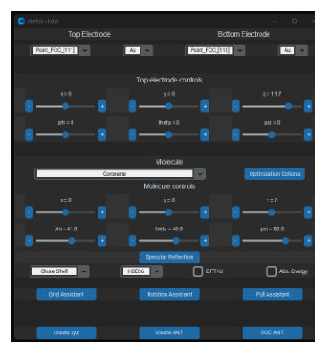
<figcaption class="paper-figure-caption"><b>Fig 1.</b> Figure 1: The ANT.UI interface, showing the controller window (left) and the 3D viewer (right).</figcaption>
</figure>
<figure class="paper-figure-card">
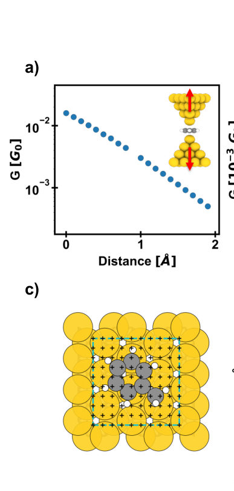
<figcaption class="paper-figure-caption"><b>Fig 2.</b> Figure 2: Examples of sequential-output calculations enabled by ANT.UI, each using first- step-only geometry optimization. (a) Transmission vs. electrode separation from a sym- metric pulling sequence on benzene. (b) Transmission vs. rotation angle of a glycerol molecule relative to the electrodes. (c) Grid scan of a toluene molecule on an Au(111) slab. Left: top view of the slab and molecule, with a cross marking each scan point. Right: 2D contour map interpolated from the data.</figcaption>
</figure>
</div>

<p><strong>Summary.</strong> This paper introduces ANT.UI, an interactive 3D graphical tool designed to automate the complex and manual process of preparing input files for NEGF-DFT quantum transport calculations. By allowing users to visually construct molecular junctions and automate systematic scans (pulling, rotating, gridding), the tool drastically lowers the barrier to entry and accelerates research in theoretical molecular electronics.</p>
<p><strong>Why it may be interesting.</strong> While focused on computational tools, the underlying physics—quantum transport through molecular junctions—is highly relevant to open quantum systems and mesoscopic physics, providing a practical framework for simulating electronic coupling.</p>
<details>
<summary>Detailed structure</summary>
<p><strong>Main problem.</strong> The primary bottleneck in theoretical molecular electronics is the time-consuming and error-prone manual preparation of 3D atomistic geometries and input files for quantum transport calculations.</p>
<p><strong>Main result.</strong> The developed tool, ANT.UI, replaces days of custom scripting with an interactive, point-and-click workflow, significantly accelerating high-throughput research in molecular electronics.</p>
<p><strong>Method.</strong> The authors created ANT.UI, a Python graphical interface with a 3D viewer, to automate the construction and formatting of input files for NEGF-DFT calculations using Gaussian and ANT.Gaussian.</p>
<p><strong>Model / system.</strong> The tool models molecular junctions consisting of metallic electrodes (e.g., Au, Pt) connected to organic molecules (e.g., benzene, glycerol). Calculations are based on Non-Equilibrium Green's Functions combined with Density Functional Theory (NEGF-DFT).</p>
<p><strong>Key observables.</strong> Zero-bias transmission (as a function of distance, angle, or position), 2D contour maps of transmission, and spatial variation in zero-bias transmission.</p>
<p><strong>Important parameters / regimes.</strong> Electrode separation distance (dz), molecular orientation angle, Hubbard-U correction values, and DFT parameters.</p>
<p><strong>Assumptions / limitations.</strong> The tool requires an ANT.Gaussian installation on an HPC and user configuration via USER_CONF.txt to adapt to the specific computational environment.</p>
<p><strong>Figures summary.</strong> Figure 1 shows the interactive ANT.UI interface. Figure 2 demonstrates the tool's automation capabilities by showing representative calculations for transmission vs. separation (benzene), transmission vs. rotation angle (glycerol), and a 2D grid scan (toluene on Au(111)).</p>
<p><strong>Paper structure.</strong> The paper introduces ANT.UI as a solution to geometry preparation bottlenecks, details its interactive 3D visualization and automation assistants (Pull, Grid, Rotation), and demonstrates its utility through examples of complex, multi-parameter quantum transport simulations.</p>
</details>
<details>
<summary>Abstract</summary>
<p>ANT.UI is a Python graphical interface that automates the construction of molecular-junction geometries for NEGF-DFT quantum transport calculations. Through a real-time 3D viewer, users interactively position electrodes and molecules and generate complete, ready-to-run input files for Gaussian and ANT.Gaussian without manual scripting. Dedicated Pull, Grid, and Rotation assistants further automate electrode-pulling sequences, surface scans, and step-wise rotation studies, with optional geometry-optimisation chaining across each sequence. By replacing a process that previously demanded days of custom scripting with a point-and-click workflow, ANT.UI accelerates research in theoretical molecular electronics and lowers the barrier to entry for new users. The software also exports all constructed geometries in standard XYZ format, allowing direct reuse in molecular dynamics codes or third-party visualization tools without manual reformatting.</p>
</details>
<p><sub><a href="#top">↑ back to top</a></sub></p>

<p><a id="paper-2609.05394"></a></p>
<h3 id="variable-charge-state-magnetic-excitations-and-kondo-effect-of-smgir111"><a href="http://arxiv.org/abs/2609.05394v1">Variable Charge State, Magnetic Excitations, and Kondo Effect of Sm/g/Ir(111)</a></h3>
<p><strong>Authors:</strong> Shixuan Shan, Tamara de Ara, Lina Liu, Zhipeng Wang, Marina Pivetta, François Patthey, Tadahiro Komeda, Daria Kývala, Jindřich Kolorenč, Harald Brune<br>
<strong>Type:</strong> both · <strong>Category:</strong> strongly correlated electrons · <strong>PDF:</strong> <a href="https://arxiv.org/pdf/2609.05394v1">https://arxiv.org/pdf/2609.05394v1</a><br>
<strong>Analysis basis:</strong> full PDF text, analyzed in chunks
<strong>Topic relevance:</strong> <code>quantum measurements</code> <strong>2/5</strong> · <code>Keldysh / 2PI / non-Gaussian methods</code> <strong>1/5</strong> · <code>analog quantum simulation</code> <strong>1/5</strong></p>
<div class="figure-strip-hint">↔ Scroll figures horizontally</div>
<div class="paper-figures-scroll">
<figure class="paper-figure-card">
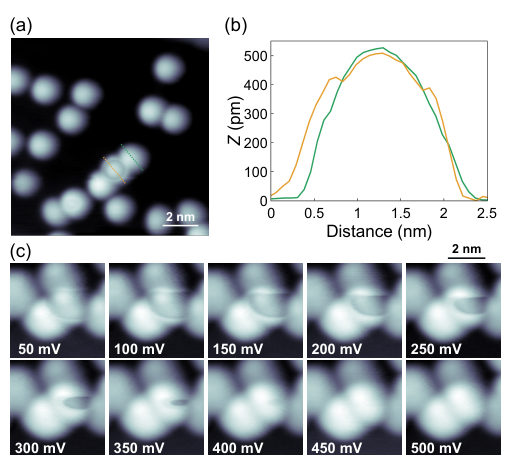
<figcaption class="paper-figure-caption"><b>Fig 1.</b> Figure 1. (a) STM image of individual Sm adatoms on a graphene island on Ir(111) (ΘSm = 8×10−3 ML, Vt = 100 mV, It = 10 pA). One atom shows a particular charge state mani- fested by a concentric ring, while all other atoms appear as regular smooth protrusions. (b) Profiles taken through a reg- ular adatom (green) and through the one with a charge ring (yellow). (c) The charge ring changes radius as the tunnel volt- age is varied, pointing to an electric field effect (It = 10 pA).</figcaption>
</figure>
<figure class="paper-figure-card">
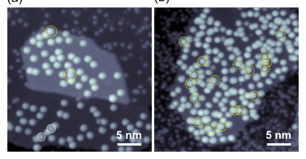
<figcaption class="paper-figure-caption"><b>Fig 2.</b> Figure 2. Coverage dependent abundance of adatoms with charge ring. (a) The upper half shows a graphene island sur- rounded by Ir(111) substrate, the lower part is a graphene island on the next lower atomic terrace. Atoms with charge ring are marked with dashed yellow circles on the upper island and with dashed white ones on the lower island (ΘSm = 8 × 10−3 ML, Vt = 100 mV, It = 10 pA). (b) Sample with 2.5 times higher Sm coverage. There is one graphene island surrounded by Ir(111). Atoms with charge ring are marked with dashed yellow circles (ΘSm = 2 × 10−2 ML, Vt = 100 mV, It = 10 pA).</figcaption>
</figure>
<figure class="paper-figure-card">
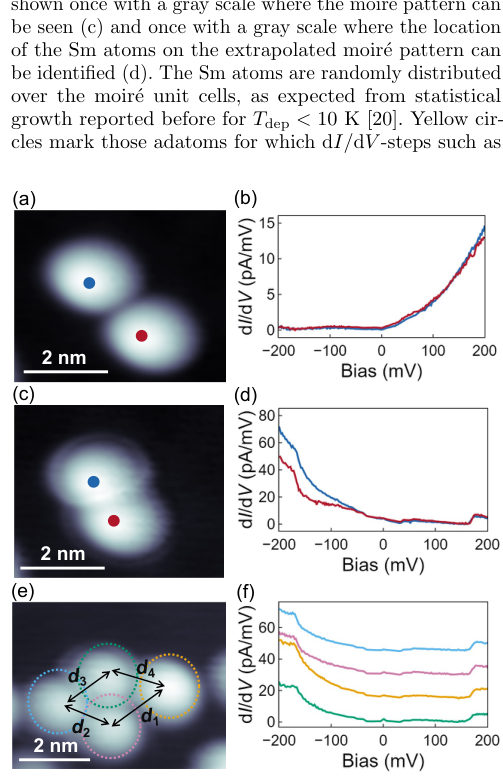
<figcaption class="paper-figure-caption"><b>Fig 3.</b> Figure 3. (a) and (c) STM images of two isolated Sm adatoms that are approached by atomic manipulation; their summits are marked in red and blue. (b) and (d) dI/dV -spectra of the two adatoms (Vt = 200 mV, It = 400 pA). Inelastic con- ductance steps appear at 160–170 mV once the atoms are approached. (e) An ensemble of four Sm adatoms with varying interatomic distances d1–d4 (Vt = 100 mV, It = 10 pA). (f) The corresponding dI/dV -curves display the inelastic conduc- tance steps for each of the four Sm atoms. The spectra are vertically offset for clarity.</figcaption>
</figure>
<figure class="paper-figure-card">
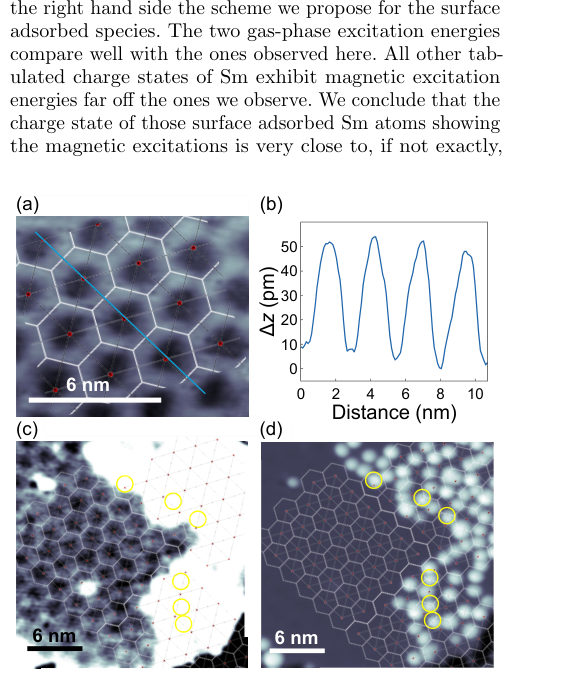
<figcaption class="paper-figure-caption"><b>Fig 4.</b> Figure 4. (a) Moir´e pattern of g/Ir(111) marked as honey- comb (white) and hexagonal (black) lattice (Vt = 100 mV, It = 10 pA). (b) Profile along the blue line in (a). (c) and (d) Sample prepared to localize the Sm adatoms on the moir´e unit cell. (c) Contrast shows the moir´e on the left side, where Sm atoms have been removed. (d) Contrast shows the adatoms on the extrapolated moir´e pattern. Yellow circles mark Sm adatoms with dI/dV steps (Vt = 100 mV, It = 10 pA).</figcaption>
</figure>
<figure class="paper-figure-card">
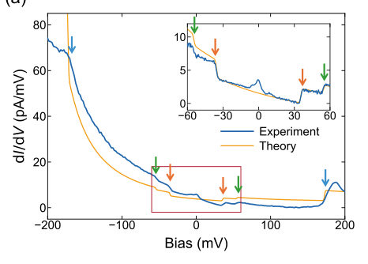
<figcaption class="paper-figure-caption"><b>Fig 5.</b> Figure 5. (a) Main figure: Wide bias voltage range dI/dV - curve recorded on a Sm+ adatom on g/Ir(111) showing three conductance steps indicated by blue, green, and yellow arrows (Vt = 200 mV, It = 400 pA). The yellow curve represents the theoretical calculation based on cotunneling theory, modeling the inelastic transitions within the adatom’s electronic shells. Inset: dI/dV -curve of a smaller energy interval showing the two low energy steps more clearly (Vt = 50 mV, It = 500 pA). The curves have a parabolic, respectively, linear background that has not been subtracted. (b) Energy level diagram of Sm+ in the gas-phase (left) and on g/Ir(111) (right). Colored arrows indicate the...</figcaption>
</figure>
</div>

<p><strong>Summary.</strong> This paper uses low-temperature STM to study Samarium adatoms on graphene/Ir(111), revealing that the adatoms exist in variable charge states and exhibit a Kondo resonance. By analyzing magnetic excitations and the Kondo peak's Zeeman splitting, the authors confirm the electronic structure, suggesting $   ext{Sm}^+$ is the ground state and providing valuable parameters for understanding correlated electron physics on surfaces.</p>
<p><strong>Why it may be interesting.</strong> The combination of local spectroscopy (STM) with many-body physics concepts like the Kondo effect and crystal field theory provides a direct experimental probe into the correlated electron physics of rare-earth adatoms, which is highly relevant to open quantum systems.</p>
<details>
<summary>Detailed structure</summary>
<p><strong>Main problem.</strong> The study investigates the charge state, magnetic excitations, and Kondo effect of individual Samarium (Sm) adatoms adsorbed on graphene/Ir(111). The goal is to understand how local electronic correlations govern the material's magnetic and charge behavior.</p>
<p><strong>Main result.</strong> The research confirms that Sm adatoms exhibit variable charge states ($    ext{Sm}^+$ vs. $    ext{Sm}^{2+}$) and display a Kondo resonance, indicating strong coupling to the substrate. The observed magnetic excitations allow for the determination of crystal field parameters for the $4f$ shell.</p>
<p><strong>Method.</strong> The work combines low-temperature Scanning Tunneling Microscopy (STM) spectroscopy ($dI/dV$) measurements with theoretical modeling, including cotunneling theory and Wigner-Eckart theorem applications.</p>
<p><strong>Model / system.</strong> The system is Sm adatoms on a graphene/Ir(111) substrate. The electronic structure is modeled using the $4f$ and $6s$ shells, considering crystal field splitting and Kondo screening effects.</p>
<p><strong>Key observables.</strong> Charge state (reversible switching via STM tip), magnetic excitations (steps in $dI/dV$ at 35 meV and 54 meV), Kondo resonance peak, and Zeeman splitting ($\Delta E_Z$).</p>
<p><strong>Important parameters / regimes.</strong> Low temperatures, interatomic distances (critical range 0.9 to 1.5 nm), and the large gas-phase $g$-factor of Sm.</p>
<p><strong>Assumptions / limitations.</strong> The analysis assumes the coupling between the adatom and electrodes is much smaller than the charging energy (cotunneling theory) and that the crystal-field splitting is small enough for certain theoretical approximations.</p>
<p><strong>Figures summary.</strong> Figures show STM images demonstrating charge rings, $dI/dV$ spectra revealing multiple conductance steps (165 meV, 54meV, 35meV), and plots detailing the Zeeman splitting of the Kondo peak.</p>
<p><strong>Paper structure.</strong> The paper progresses by first characterizing the variable charge states using STM imaging, then measuring magnetic excitations via $dI/dV$ spectroscopy, and finally analyzing the Kondo resonance and its Zeeman splitting to confirm the electronic structure and ground state.</p>
</details>
<details>
<summary>Abstract</summary>
<p>Using low-temperature scanning tunneling microscopy we investigate the charge state, magnetic excitations, and Kondo features of individual Sm adatoms on graphene/Ir(111). Depending on the number and distance of their neighbors, Sm atoms can be in two discrete charge states. At certain distances, a reversible transition between these two states is induced by the electric field of the STM tip leading to concentric charge rings in the images. Only atoms in one of the two charge states exhibit magnetic excitations in d$I$/d$V$ spectra. Two such excitations are located at 35~meV and 54~meV and related to transitions from the $J = 1/2$ ground state doublet to the first crystal field split $J = 3/2$ multiplet. Together with the intra-atomic exchange excitations at higher energy, these observations indicate that Sm transfers one $6s$ electron to the substrate while it retains its gas-phase $4f$ filling. New for lanthanide adatoms, we observe a Kondo resonance. The Zeeman splitting of the Kondo peak reveals that Sm retains its large gas-phase $g$-factor. Comparison of d$I$/d$V$ spectra to cotunneling theory yields the crystal field acting on the $4f$ shell and, consequently, on the $J = 3/2$ quadruplet, confirms Sm$^+$ as the ground state, and identifies Sm$^{2+}$ as being energetically close, thereby rationalizing our observation of variable charge states.</p>
</details>
<p><sub><a href="#top">↑ back to top</a></sub></p>

<p><a id="paper-2609.04938"></a></p>
<h3 id="global-fixed-point-potentials-in-the-abelian-higgs-model-with-math857math-flavors"><a href="http://arxiv.org/abs/2609.04938v1">Global Fixed Point Potentials in the Abelian Higgs Model with $N$ flavors</a></h3>
<p><strong>Authors:</strong> Gergely Fejős, Shunsuke Yabunaka<br>
<strong>Type:</strong> theory · <strong>Category:</strong> other · <strong>PDF:</strong> <a href="https://arxiv.org/pdf/2609.04938v1">https://arxiv.org/pdf/2609.04938v1</a><br>
<strong>Analysis basis:</strong> full PDF text, analyzed in chunks
<strong>Topic relevance:</strong> <code>Keldysh / 2PI / non-Gaussian methods</code> <strong>2/5</strong></p>
<div class="figure-strip-hint">↔ Scroll figures horizontally</div>
<div class="paper-figures-scroll">
<figure class="paper-figure-card">
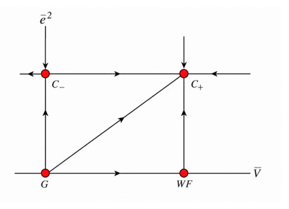
<figcaption class="paper-figure-caption"><b>Fig 1.</b> FIG. 1. Schematic of the RG flows (indicated by the arrows) and its fixed points (indicated by the red circles) deduced from the formal argument given below Eq. (30) based on the conventional large N scaling, corroborated near d = 4 for N ≥ 183 by d = 4 −ϵ expansion. G refers to the Gaussian, while WP to the Wilson-Fisher fixed point. For the definitions of C+ and C−, see the text. The temperature direction, relevant in all fixed points, can be considered perpendicular to the plane.</figcaption>
</figure>
<figure class="paper-figure-card">
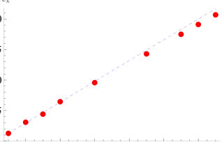
<figcaption class="paper-figure-caption"><b>Fig 2.</b> FIG. 4. The inverse of the scaled squared charge, 1/˜e2 k, at the C+ FP as a function of the flavor number N in d = 3 when setting ˜mA,k=0. The dashed line refers to the line ˜e2 k = 0.587/(N −1.00625).</figcaption>
</figure>
</div>

<p><strong>Summary.</strong> This paper uses the Functional Renormalization Group to study the fixed point structure of the Abelian Higgs model in $d$ dimensions. It demonstrates that standard perturbative methods fail near $d=3$, revealing a richer fixed point structure. The work provides non-perturbative insights into how the critical flavor number and gauge symmetry behave in this quantum field theory.</p>
<p><strong>Why it may be interesting.</strong> While focused on particle physics, the use of FRG techniques to study non-perturbative fixed points and symmetry restoration in gauge theories is a powerful theoretical tool applicable to strongly interacting quantum systems.</p>
<details>
<summary>Detailed structure</summary>
<p><strong>Main problem.</strong> The study investigates the existence and properties of charged fixed points in the Abelian Higgs model with $N$ flavors in $d$ dimensions.</p>
<p><strong>Main result.</strong> The authors find that the $\epsilon=4-d$ expansion fails near $d=3$, and global fixed point potentials reveal significant modifications to the critical flavor number compared to perturbative predictions.</p>
<p><strong>Method.</strong> The functional renormalization group (FRG) formalism is employed, utilizing the Local Potential Approximation (LPA') to derive and solve coupled flow equations for couplings and the effective potential.</p>
<p><strong>Model / system.</strong> The system is the $N$-component Abelian Higgs model, involving an $N$-component complex scalar field $\phi_a$ and a $U(1)$ gauge field $A_i$. The analysis focuses on the flow of the effective action $\Gamma_k$ using the Wetterich equation.</p>
<p><strong>Key observables.</strong> Scale-dependent couplings ($Z_{\phi,k}, Z_{A,k}, e_k$), the effective potential $V_k(
ho)$, and the critical flavor number $N_c$.</p>
<p><strong>Important parameters / regimes.</strong> Dimensionality $d$, the number of flavors $N$, and the gauge fixing parameter $\xi$.</p>
<p><strong>Assumptions / limitations.</strong> The analysis relies on the Landau gauge ($\xi 	o 0$) and imposes constraints derived from Ward-Takahashi identities to ensure gauge symmetry restoration in the infrared limit.</p>
<p><strong>Paper structure.</strong> The paper systematically derives the FRG flow equations for the effective potential and anomalous dimensions, paying special attention to deriving and comparing the gauge mass flow equation from the Wetterich equation versus the Modified Ward-Takahashi Identity.</p>
</details>
<details>
<summary>Abstract</summary>
<p>Existence of charged fixed points in the Abelian Higgs model with $N$ flavors in $d$ dimensions is studied using the functional renormalization group. We numerically solve the coupled fixed point equations for the scale dependent charge and the non-perturbative effective potential for the scalar field. We show that the $ε=4-d$ expansion, famously successful in theories with $O(N)$ symmetry, fails to produce reliable results when taking the $ε\rightarrow 1$ limit. By determining global fixed point potentials, it is shown that the critical flavor number at which charged fixed points appear, modifies significantly compared to the perturbative treatment. In $d=3$, signs of a richer fixed point structure with presumably multicritical fixed points are also found. Discussions include subtleties of the gauge fixing and the corresponding modified Ward-Takahashi identities, including the possibility of a nonzero dimensionless photon mass at the infrared fixed point.</p>
</details>
<p><sub><a href="#top">↑ back to top</a></sub></p>

<p><a id="paper-2609.04811"></a></p>
<h3 id="challenges-in-orbital-current-driven-domain-wall-motion-in-light-metalferrimagnet-heterostructures"><a href="http://arxiv.org/abs/2609.04811v1">Challenges in orbital current-driven domain wall motion in light metal/ferrimagnet heterostructures</a></h3>
<p><strong>Authors:</strong> Min-Gu Kang, Jaerin Kim, Benjamin J. Jacot, Laura Van Schie, Pietro Gambardella<br>
<strong>Type:</strong> experiment · <strong>Category:</strong> other · <strong>PDF:</strong> <a href="https://arxiv.org/pdf/2609.04811v1">https://arxiv.org/pdf/2609.04811v1</a><br>
<strong>Analysis basis:</strong> full PDF text, analyzed in chunks
<strong>Topic relevance:</strong> <code>Keldysh / 2PI / non-Gaussian methods</code> <strong>1/5</strong> · <code>analog quantum simulation</code> <strong>1/5</strong> · <code>correlated / nonlocal dissipation</code> <strong>1/5</strong> · <code>driven-dissipative phase transition</code> <strong>1/5</strong> · <code>methods for driven-dissipative</code> <strong>1/5</strong> · <code>non-equilibrium universality</code> <strong>1/5</strong> · <code>quantum measurements</code> <strong>1/5</strong></p>
<div class="figure-strip-hint">↔ Scroll figures horizontally</div>
<div class="paper-figures-scroll">
<figure class="paper-figure-card">

<figcaption class="paper-figure-caption"><b>Fig 1.</b> Figure 4(d) summarizes the extracted 𝜉𝐷𝐿</figcaption>
</figure>
<figure class="paper-figure-card">
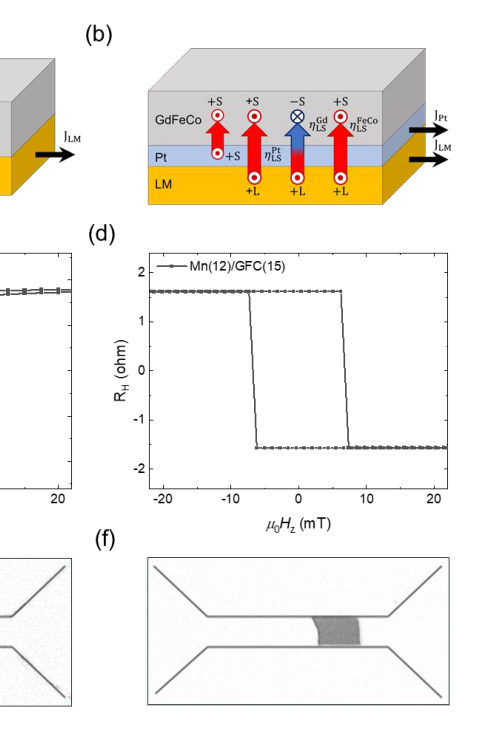
<figcaption class="paper-figure-caption"><b>Fig 2.</b> Figure 1. (a) Schematic of orbital-current-induced torque in LM/GFC bilayers. A charge current in the</figcaption>
</figure>
<figure class="paper-figure-card">
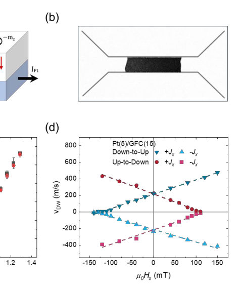
<figcaption class="paper-figure-caption"><b>Fig 3.</b> Figure 2. (a) Schematics of the Pt(5)/GFC(15) device structure. The sublattice magnetic moments in</figcaption>
</figure>
<figure class="paper-figure-card">
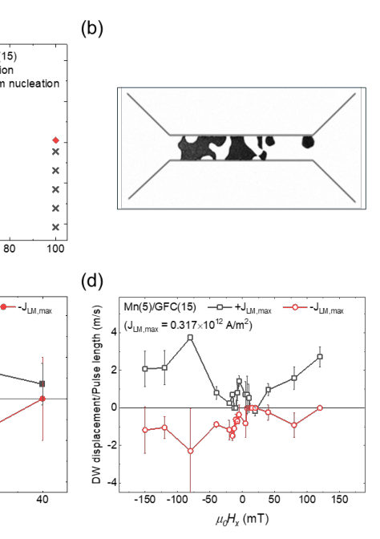
<figcaption class="paper-figure-caption"><b>Fig 4.</b> Figure 3. (a) Diagram showing the effect of pulse injection in a Mn(12)/GFC(15) racetrack as a function</figcaption>
</figure>
<figure class="paper-figure-card">
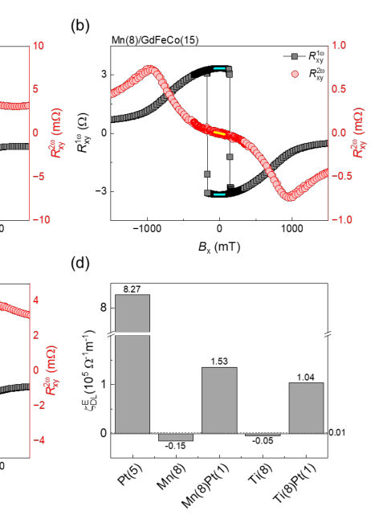
<figcaption class="paper-figure-caption"><b>Fig 5.</b> Figure 4. (a-c) Representative first- (𝑅𝑥𝑦 1𝜔 , black) and second-harmonic (𝑅𝑥𝑦 2𝜔 , red) Hall resistance</figcaption>
</figure>
</div>

<p><strong>Summary.</strong> This work explores using orbital currents from light metals to drive domain wall motion in ferrimagnets, bypassing the need for strong SOC. Experiments showed that while the reference Pt/GFC structure works well, direct injection from Mn or Ti fails to move the domain walls, highlighting that efficient orbital-to-spin torque conversion remains a major hurdle.</p>
<p><strong>Why it may be interesting.</strong> Although focused on condensed matter magnetism, the study of torque generation and dissipation at interfaces, particularly involving non-equilibrium currents, touches upon concepts relevant to open quantum systems and energy transfer dynamics.</p>
<details>
<summary>Detailed structure</summary>
<p><strong>Main problem.</strong> The study investigates whether orbital currents generated by charge injection in light metals can effectively drive domain wall (DW) motion in ferrimagnetic heterostructures, offering a mechanism independent of strong spin-orbit coupling (SOC).</p>
<p><strong>Main result.</strong> While the reference Pt/GFC structure showed robust DW motion, direct injection from Mn/GFC or Ti/GFC failed to drive measurable DW motion, suggesting weak torque conversion is the primary challenge.</p>
<p><strong>Method.</strong> The authors used polar MOKE microscopy to measure DW displacement ($\Delta x$) after applying current pulses, complemented by SQUID magnetometry and second-harmonic Hall measurements.</p>
<p><strong>Model / system.</strong> The system involves light metal (LM) / ferrimagnet (GFC) heterostructures, where GFC is $   ext{Gd}<em 75>{25}(   ext{Fe}_9   ext{Co}_1)</em>$. The mechanism relies on injecting orbital angular momentum via the Orbital Hall Effect and its subsequent conversion to spin torque at the interface.</p>
<p><strong>Key observables.</strong> Domain wall velocity ($v_{DW}$), damping-like torque, and interfacial Dzyaloshinskii-Moriya interaction (DMI).</p>
<p><strong>Important parameters / regimes.</strong> Current densities ($J_{LM}$), pulse duration ($t_p$), and the thickness of the Pt conversion layer (1 nm).</p>
<p><strong>Assumptions / limitations.</strong> The analysis assumes that the lack of motion in Mn/Ti/GFC is due to insufficient torque generation or poor interfacial coupling, rather than intrinsic magnetic failure.</p>
<p><strong>Figures summary.</strong> Not specified, but the notes indicate measurements of DW displacement vs. current density and field dependence.</p>
<p><strong>Paper structure.</strong> The paper compares three heterostructures ($   ext{Pt}/    ext{GFC}$, $    ext{LM}/    ext{GFC}$, $    ext{LM}/    ext{Pt}/    ext{GFC}$), presents transport measurements (AHE, 2nd-harmonic Hall), and concludes by analyzing the required torque mechanisms and interfacial coupling strengths.</p>
</details>
<details>
<summary>Abstract</summary>
<p>Recent advances in spintronics suggest that orbital Hall currents generated by charge injection in light metals can provide nonequilibrium angular momentum without relying on strong spin-orbit coupling (SOC). Here, we examine whether such orbital currents can drive domain wall (DW) motion in an amorphous ferrimagnetic alloy, Gd$_{25}$(Fe$_{9}$Co$_{1}$)$_{75}$ (GFC), where the rare-earth sublattice offers strong SOC for orbital-to-spin conversion. We compare three representative heterostructures: Pt/GFC as a spin Hall reference, light-metal (Mn or Ti)/GFC for direct orbital-current injection, and light-metal/Pt/GFC incorporating an ultrathin Pt layer for orbital-to-spin conversion. Whereas Pt/GFC exhibits robust and reproducible spin-orbit-torque-driven DW motion, no current-driven DW motion is detected in Mn/GFC or Ti/GFC. Second-harmonic Hall measurements nevertheless reveal finite damping-like torques in both Mn/GFC and Ti/GFC, demonstrating that angular-momentum transfer into GFC does occur but is far weaker than in Pt/GFC. Inserting a 1-nm-thick Pt conversion layer strongly enhances the damping-like torque and restores DW motion. Thickness-dependent analysis further shows that DW mobility and depinning thresholds correlate with the interfacial Dzyaloshinskii-Moriya interaction and domain-wall width, highlighting weak torque conversion and insufficient interfacial stabilization of chiral DWs as key challenges for orbital-driven DW motion in light-metal/ferrimagnet heterostructures.</p>
</details>
<p><sub><a href="#top">↑ back to top</a></sub></p>

<p><a id="paper-2609.04954"></a></p>
<h3 id="nonreciprocal-plasmonic-response-of-drift-biased-two-dimensional-metals"><a href="http://arxiv.org/abs/2609.04954v1">Nonreciprocal plasmonic response of drift-biased two-dimensional metals</a></h3>
<p><strong>Authors:</strong> Gonzalo Álvarez-Pérez, Joel D. Cox<br>
<strong>Type:</strong> theory · <strong>Category:</strong> other · <strong>PDF:</strong> <a href="https://arxiv.org/pdf/2609.04954v1">https://arxiv.org/pdf/2609.04954v1</a><br>
<strong>Analysis basis:</strong> full PDF text, analyzed in chunks
<strong>Topic relevance:</strong> <code>Keldysh / 2PI / non-Gaussian methods</code> <strong>1/5</strong> · <code>interference shaping light</code> <strong>1/5</strong> · <code>methods for driven-dissipative</code> <strong>1/5</strong></p>
<div class="figure-strip-hint">↔ Scroll figures horizontally</div>
<div class="paper-figures-scroll">
<figure class="paper-figure-card">
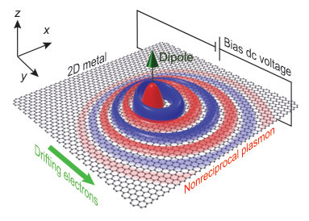
<figcaption class="paper-figure-caption"><b>Fig 1.</b> FIG. 1. Schematics of a 2D metal under drift-induced nonre- ciprocity. A dc voltage induces an electron drift in a 2DEG, giving rise to nonreciprocal plasmon propagation.</figcaption>
</figure>
<figure class="paper-figure-card">
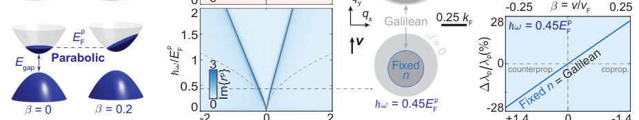
<figcaption class="paper-figure-caption"><b>Fig 2.</b> FIG. 2. Drift-induced nonreciprocity in 2DEGs with Dirac and parabolic dispersions. (a) Schematic band structures and corresponding Fermi surfaces in momentum space for Dirac (upper) and parabolic (lower) dispersions, without drift (β = 0, left) and with drift (β ̸= 0, right). The drift velocity v = βvFˆv biases the occupied states in k-space, breaking inversion symmetry about k = 0. The parabolic Fermi sea is rigidly translated by kd = m∗v/ℏ, whereas the Dirac contour is deformed. (b) Loss function Im{rp(q, ω)} for Dirac (upper) and parabolic (lower) 2DEGs, for β = 0.2 at fixed n. Solid contours show the drift-biased response; the undrifted dispersion (β = 0) and Galilean dispersion are...</figcaption>
</figure>
</div>

<p><strong>Summary.</strong> This theoretical work analyzes how applying a constant drift bias to 2D electron gases induces nonreciprocal plasmonic responses. By comparing Dirac and parabolic band structures, the authors show that parabolic systems are particularly promising platforms because their nonreciprocity is strongly tunable by the interplay between the drift velocity and the material's inherent plasmon nonlocality.</p>
<p><strong>Why it may be interesting.</strong> The work provides a detailed theoretical understanding of how external biases (drift) can induce directional asymmetry in plasmonics in solid-state systems, which is relevant to engineered quantum optical components.</p>
<details>
<summary>Detailed structure</summary>
<p><strong>Main problem.</strong> The paper develops a framework to understand and predict the nonreciprocal plasmonic response in two-dimensional electron gases (2DEGs) when subjected to a drift bias, circumventing the need for large external magnetic fields.</p>
<p><strong>Main result.</strong> Nonreciprocal plasmon propagation is observed in both Dirac and parabolic 2DEGs, with parabolic systems showing stronger nonreciprocity due to the interplay of drift and plasmon nonlocality.</p>
<p><strong>Method.</strong> The study derives closed-form, drift-dependent conductivity tensors by solving the Boltzmann transport equation in the relaxation-time approximation.</p>
<p><strong>Model / system.</strong> The physical system is a drift-biased 2DEG, analyzed for two distinct band dispersions: Dirac (linear) and parabolic (quadratic). The theory models the response using nonlocal electrodynamics.</p>
<p><strong>Key observables.</strong> Plasmon dispersion, near-field emission of a point dipole, nonreciprocal propagation (directional asymmetry), and the Fizeau shift ($\Delta\lambda/\lambda$).</p>
<p><strong>Important parameters / regimes.</strong> The dimensionless drift parameter $eta = v/v_{
u F}$ (ratio of drift speed to undrifted Fermi velocity); the band dispersion type (Dirac vs. Parabolic).</p>
<p><strong>Assumptions / limitations.</strong> The analysis relies on the relaxation-time approximation for the Boltzmann transport equation and assumes an isotropic Fermi surface for initial derivations.</p>
<p><strong>Figures summary.</strong> Figures compare band structures and Fermi surfaces under drift, and plot the loss function and Fizeau shift for both Dirac and parabolic systems, demonstrating directional asymmetry.</p>
<p><strong>Paper structure.</strong> The paper progresses by deriving the nonlocal conductivity tensor from the BTE for both band types, analyzing the resulting plasmon dispersion and nonreciprocity, and concluding with a comparison of the physical mechanisms governing the observed directional asymmetry.</p>
</details>
<details>
<summary>Abstract</summary>
<p>We develop a nonlocal electrodynamic framework for drift-biased two-dimensional electron gases (2DEGs) with Dirac (linear) and parabolic (quadratic) dispersions, deriving closed-form drift-dependent conductivity tensors from the Boltzmann transport equation. We obtain the plasmon dispersion and near-field emission of a point dipole, revealing nonreciprocal propagation in both systems. At equal drift parameter, the parabolic 2DEG exhibits stronger nonreciprocity than the Dirac system, although we find that a larger drift parameter does not by itself produce stronger nonreciprocity: the response is set by the interplay of drift and plasmon nonlocality. As such, the combination of strong nonlocality and experimentally accessible drift velocities of semiconductor 2DEGs identifies parabolic systems as a promising platform for tunable, nonreciprocal plasmonics.</p>
</details>
<p><sub><a href="#top">↑ back to top</a></sub></p>

<p><a id="paper-2609.05192"></a></p>
<h3 id="dynamical-reduction-of-two-series-josephson-junctions-to-a-synthetic-high-transparency-josephson-element"><a href="http://arxiv.org/abs/2609.05192v1">Dynamical Reduction of Two Series Josephson Junctions to a Synthetic High-Transparency Josephson Element</a></h3>
<p><strong>Authors:</strong> Claudio Guarcello, Sergio Pagano, Carlo Barone, Alessandro Bruno, A. Mert Bozkurt, Giovanni Filatrella<br>
<strong>Type:</strong> theory · <strong>Category:</strong> other · <strong>PDF:</strong> <a href="https://arxiv.org/pdf/2609.05192v1">https://arxiv.org/pdf/2609.05192v1</a><br>
<strong>Analysis basis:</strong> full PDF text, analyzed in chunks
<strong>Topic relevance:</strong> <code>driven-dissipative phase transition</code> <strong>1/5</strong> · <code>methods for driven-dissipative</code> <strong>1/5</strong></p>
<div class="figure-strip-hint">↔ Scroll figures horizontally</div>
<div class="paper-figures-scroll">
<figure class="paper-figure-card">
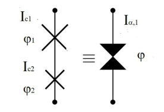
<figcaption class="paper-figure-caption"><b>Fig 1.</b> Fig. 1. The Josephson synthetic element: a larger JJ of critical current Ic1 in series with a smaller JJ with critical current Ic2 = αIc1, 0 &lt; α ≤1.</figcaption>
</figure>
<figure class="paper-figure-card">
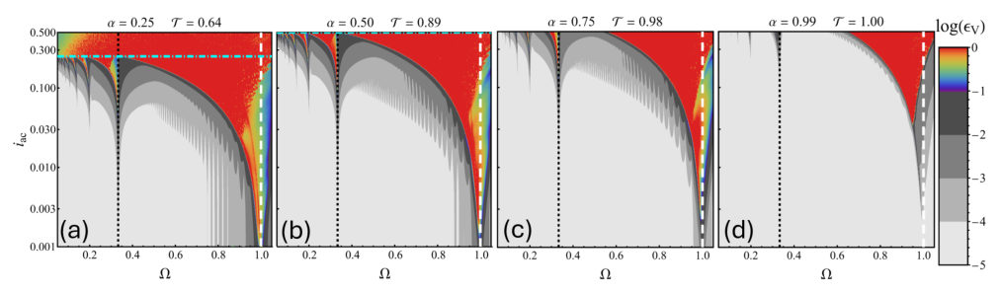
<figcaption class="paper-figure-caption"><b>Fig 2.</b> Fig. 2. Normalized RMS waveform error ϵV versus the normalized drive frequency Ωand ac-current amplitude iac. Panels (a)–(d) correspond to α = 0.25, 0.50, 0.75, and 0.99, respectively, with effective transparencies T ≃{0.64, 0.89, 0.98, 1.00}. The white dashed line marks the common plasma frequency Ωp1 = Ωp2 = Ωp,eff = 1, while the black dotted line indicates the third-order superharmonic condition Ω= Ωp/3. The cyan dot-dashed line, when within the displayed range, marks iac = α, corresponding to Iac = Ic2. The color scale reports log10(ϵV ), with values below 10−5 clipped at the numerical floor.</figcaption>
</figure>
<figure class="paper-figure-card">
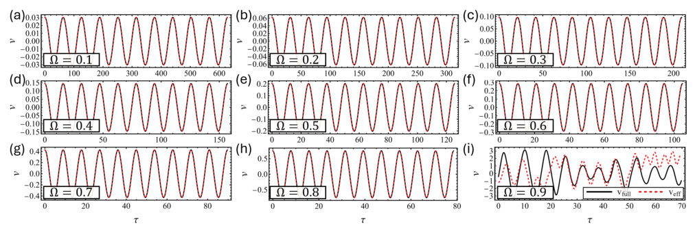
<figcaption class="paper-figure-caption"><b>Fig 3.</b> Fig. 3. Time-domain comparison between the normalized voltage vfull of the complete two-JJ system (black solid line) and veff of the effective model (red dashed line), for α = 0.5 and iac = 0.1. Panels (a)–(i) correspond to Ω= 0.1, 0.2, 0.3, 0.4, 0.5, 0.6, 0.7, 0.8, and 0.9, respectively. The effective model closely follows the full voltage response up to Ω= 0.8, including the strong increase in oscillation amplitude on approaching resonance. A pronounced nonlinear waveform mismatch appears at Ω= 0.9. The legend in panel (i) refers to all panels.</figcaption>
</figure>
</div>

<p><strong>Summary.</strong> This paper analyzes whether two series Josephson Junctions can be accurately modeled by a single, synthetic high-transparency element, especially when considering finite-frequency driving. By deriving an effective single-element model using low-amplitude approximations, the authors quantitatively test its validity against the full two-junction dynamics. The results establish clear operational limits, showing the approximation breaks down near the system's plasma frequency.</p>
<p><strong>Why it may be interesting.</strong> This work provides a quantitative dynamical criterion for model reduction in superconducting circuits, which is crucial for simulating complex Josephson junction arrays and metamaterials where full numerical simulation is intractable.</p>
<details>
<summary>Detailed structure</summary>
<p><strong>Main problem.</strong> The paper investigates the dynamical validity of simplifying the complex dynamics of two series Josephson Junctions (JJs) into a single, effective high-transparency element.</p>
<p><strong>Main result.</strong> The single-element description provides high accuracy over a broad range of low drive frequencies and amplitudes, but significant deviations appear near the system's plasma frequency scale.</p>
<p><strong>Method.</strong> The authors derived an effective single second-order differential equation by applying low-frequency and small-phase approximations to the full two-junction system, and validated this reduction by comparing voltage waveforms.</p>
<p><strong>Model / system.</strong> The system consists of two conventional JJs in series, modeled by the Resistively and Capacitively Shunted Junction (RCSJ) equations. The reduction maps the two coupled second-order dynamics to a single effective element.</p>
<p><strong>Key observables.</strong> Normalized root-mean-square (RMS) error ($\epsilon_V$) between the full and effective voltage waveforms, and the voltage waveforms themselves.</p>
<p><strong>Important parameters / regimes.</strong> Junction asymmetry ratio ($\alpha$), drive frequency ($\Omega$), drive amplitude ($i_{ac}$), and the system's plasma frequency scale ($\Omega_{p,eff}$).</p>
<p><strong>Assumptions / limitations.</strong> The effective element parameters are derived under low-frequency and small-amplitude approximations, which limits the guaranteed validity of the reduction.</p>
<p><strong>Figures summary.</strong> Figure 2 shows the RMS error ($\epsilon_V$) vs. drive frequency ($\Omega$) and amplitude ($i_{ac}$), illustrating the error region. Figure 3 compares time-domain voltage waveforms, showing agreement up to a certain frequency before divergence.</p>
<p><strong>Paper structure.</strong> The paper first establishes the static limit mapping, then derives the effective single-element dynamics using approximations, and finally validates this reduction by numerically comparing the full two-JJ system against the effective single-element model across varying drive conditions.</p>
</details>
<details>
<summary>Abstract</summary>
<p>Two conventional Josephson junctions connected in series can reproduce, in the static limit in which the currents through the capacitive and resistive channels are negligible, the current-phase relation of a single effective weak link with tunable transparency. Therefore, the two-junction series can be treated as a single synthetic high-transparency element. Here, we investigate to what extent this mapping remains valid under finite-frequency drive and retaining the junctions' resistive and capacitive terms. The full resistively and capacitively shunted junction equations are compared with an effective synthetic element with tunable transparency that retains the synthetic tunable-transparency current-phase relation together with effective capacitive and dissipative terms, thus reducing the two second order degree of freedom system to a single second order degree of freedom. The resulting single-element dynamics is compared with the complete two-junction system under ac excitation. The agreement is quantified through a normalized root-mean-square error between the full and effective voltage waveforms. A broad low-error region is found at low drive frequency, while pronounced deviations emerge as the drive frequency approaches the relevant plasma-frequency scale and at larger drive amplitudes. The results provide a quantitative dynamical criterion for using the reduced single-element description of a synthetic high-transparency Josephson element in superconducting circuits.</p>
</details>
<p><sub><a href="#top">↑ back to top</a></sub></p>

<p><a id="paper-2609.05188"></a></p>
<h3 id="electrostatic-splitting-of-an-edge-magnetoplasmon-resonator"><a href="http://arxiv.org/abs/2609.05188v1">Electrostatic splitting of an Edge Magnetoplasmon Resonator</a></h3>
<p><strong>Authors:</strong> Sloän Kouamé, Elric Frigerio, Giacomo Rebora, Suvankar Purkait, Yong Jin, Ulf Gennser, Antonella Cavanna, Jean-Marc Berroir, Emmanuel Baudin, Pascal Degiovanni, François D. Parmentier, Gwendal Fève, Gerbold C. Ménard<br>
<strong>Type:</strong> experiment · <strong>Category:</strong> strongly correlated electrons · <strong>PDF:</strong> <a href="https://arxiv.org/pdf/2609.05188v1">https://arxiv.org/pdf/2609.05188v1</a><br>
<strong>Analysis basis:</strong> full PDF text, analyzed in chunks
<strong>Topic relevance:</strong> <code>analog quantum simulation</code> <strong>1/5</strong> · <code>quantum measurements</code> <strong>1/5</strong></p>
<div class="figure-strip-hint">↔ Scroll figures horizontally</div>
<div class="paper-figures-scroll">
<figure class="paper-figure-card">
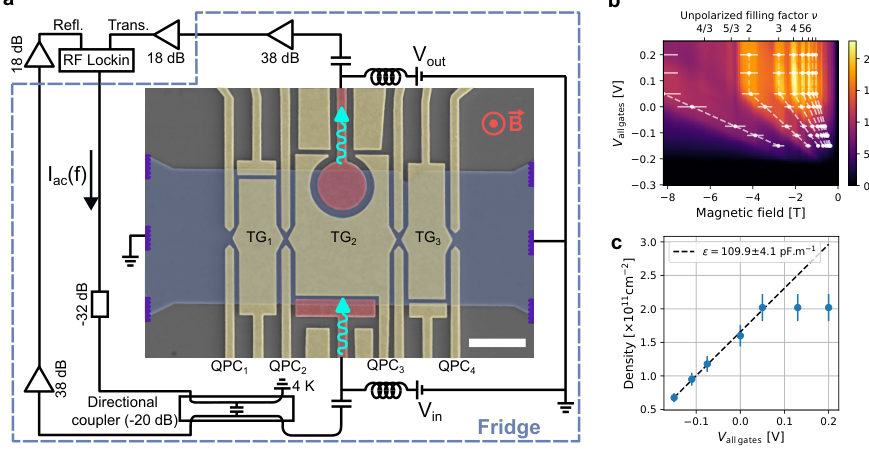
<figcaption class="paper-figure-caption"><b>Fig 1.</b> FIG. 1. Sample and measurement apparatus: The sample is constituted of a 2DEG covered by a set of electrostatic (yellow) and rf (red) gates. Ohmic contacts are also present at the edge of the sample and are simply schematically represented here (purple). The input rf signal is sent from a radiofrequency lock-in amplifier and passes through distributed attenuators (-32 dB total attenuation) and a directional coupler (-20 dB attenuation). The signal then has two possible paths, either go through the sample where it is collected by a first set of amplifiers, or is reflected and collected by the second set of amplifiers and sent to another input of the lock-in amplifier. The applied magnetic...</figcaption>
</figure>
<figure class="paper-figure-card">
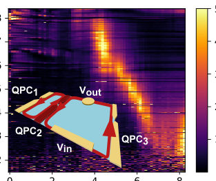
<figcaption class="paper-figure-caption"><b>Fig 2.</b> FIG. 2. RF characterization of the device: (a) Transmis- sion map of the cavity in the ”middle left” configuration. In this situation, QPC1 and QPC3 are pinched-off. (b) Same in the ”small” configuration. In this case, QPC2 is also pinched- off, therefore isolating the left part of the device from the input and output gates. The insets show the cavity configu- rations schematically where the top gates have been removed for clarity.</figcaption>
</figure>
<figure class="paper-figure-card">
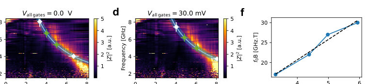
<figcaption class="paper-figure-caption"><b>Fig 3.</b> FIG. 3. Estimation of gate capacitance: (a)-(d) Frequency vs. Magnetic field maps of the transmission through the cavity in the ”middle left” configuration (see inset of figure 2.b) for various polarization Vall gates of gates TG1, TG2 and QPC2 (−100 mV, −30 mV, 0 mV and 30 mV respectively). The white dots correspond to the position of the integer plateaus and the green ones to the fractional ones. The full lines correspond to the fit of f0B that follows the 1/B trend of the resonance frequency. (e) Extracted value of the electronic density (based on the position of the intensity maxima). The dashed line indicates the linear fit of the density dependence on the gate voltage from which we...</figcaption>
</figure>
<figure class="paper-figure-card">
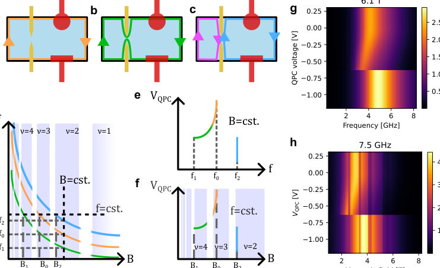
<figcaption class="paper-figure-caption"><b>Fig 4.</b> FIG. 4. Effect of the QPC closing on the EMP resonance: By applying a voltage on a QPC within an EMP resonator, we go from the configuration of (a) an edge mode traveling around the edge of the full cavity to a (b) pinched mode at the level of the QPC and finally, to (c) two fully separated cavities for very negative voltages. (d) Frequency- and field-dependence of tracked resonance frequencies: in the (f, B) plane, the open QPC configuration leads to the resonance shown in orange. As the QPC voltage becomes more negative, the perimeter increase leads to the decrease of the resonance frequency shown here in green. Finally, after the pinch-off point, the perimeter is smaller than the one of...</figcaption>
</figure>
<figure class="paper-figure-card">
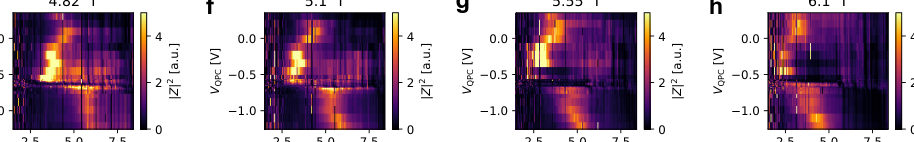
<figcaption class="paper-figure-caption"><b>Fig 5.</b> FIG. 5. Acquisition methods, fixed frequency vs fixed field: (a)-(d) Transmission signal acquired as a function of gate voltage and magnetic field for frequencies f = 4.3 GHz, 5.0 GHz, 6.0 GHz and 7.5 GHz. The only treatment applied to the data is the subtraction of the background signal. (e)-(h) Transmission signal acquired as a function of QPC voltage and frequency for a magnetic fields B = 4.82 T, 5.1 T, 5.55 T and 6.1 T. In order to display the data, the normalization procedure described in [20] has been used on every field vs. frequency map before extracting the necessary data to plot this figure. Only the offset has been subtracted from the data.</figcaption>
</figure>
</div>

<p><strong>Summary.</strong> This paper experimentally investigates edge magnetoplasmon resonators in quantum Hall systems to detect and characterize various quantum Hall states. By embedding a quantum point contact, the researchers precisely control the cavity geometry and measure the resulting shifts in magnetoplasmon resonance frequencies. This work provides strong evidence for both integer and fractional quantum Hall physics using microwave spectroscopy.</p>
<p><strong>Why it may be interesting.</strong> The work provides highly controlled experimental access to probing fractional quantum Hall states via collective excitations (magnetoplasmons), which is a key area in strongly correlated electron physics.</p>
<details>
<summary>Detailed structure</summary>
<p><strong>Main problem.</strong> The study investigates how embedding a quantum point contact within an edge magnetoplasmon resonator affects the propagating magnetoplasmonic mode.</p>
<p><strong>Main result.</strong> The experiment unambiguously detects signatures of both integer ($
u=1, 2$) and fractional quantum Hall states ($
u=4/3, 2/3$) using radiofrequency transmission measurements.</p>
<p><strong>Method.</strong> The research combines DC transport measurements with RF characterization, using electrostatic gating to control the system and probe resonance shifts.</p>
<p><strong>Model / system.</strong> The physical platform is a two-dimensional electron gas (2DEG) in an AlGaAs/GaAs heterostructure, configured as an edge magnetoplasmon resonator with multiple QPCs defining cavity geometries.</p>
<p><strong>Key observables.</strong> Quantum Hall plateau signatures ($
u$), RF resonance frequencies, and the dependence of the cavity perimeter on gate voltage.</p>
<p><strong>Important parameters / regimes.</strong> Filling factors ($
u=1, 2, 4/3, 2/3$), magnetic field ($B$), and gate voltages ($V_G$).</p>
<p><strong>Assumptions / limitations.</strong> The analysis assumes the EMP velocity is proportional to the electronic density and that the resonance frequency follows a predictable dependence on the cavity perimeter.</p>
<p><strong>Figures summary.</strong> Figures show sample setups, RF transmission maps ($|Z|^2$) varying with magnetic field and frequency for different cavity configurations, and plots demonstrating resonance shifts upon QPC closing.</p>
<p><strong>Paper structure.</strong> The paper progresses by first detailing the setup and using DC measurements to characterize the 2DEG, then employing RF measurements to map magnetoplasmon resonances, and finally analyzing how QPC gating controls the cavity size and reveals the underlying quantum Hall physics.</p>
</details>
<details>
<summary>Abstract</summary>
<p>Edge-magnetoplasmon resonators have been proposed as a powerful tool to detect anyons by introducing a quantum point contact into an isolated quantum Hall system probed via radiofrequency radiation. In this paper, we study the effect of a quantum point contact embedded within an edge-magnetoplasmon resonator and how its polarization influences the propagating magnetoplasmonic mode. Combining dc and rf measurements, we unambiguously evidence the signature of both integer ($ν= 1$ and $2$) and fractional quantum Hall states ($ν= 4/3$ and $2/3$) within the radiofrequency transmission signal. Using electrostatic gating, we determine the physical parameters characterizing the electrostatic edge of an AlGaAs/GaAs based two-dimensional electron gas. We extract the dependence of the cavity perimeter with the gate voltage of the quantum point contact and fully characterize the path followed by edge magnetoplasmons in this system. Finally, we provide a geometric model in good agreement with experimental results.</p>
</details>
<p><sub><a href="#top">↑ back to top</a></sub></p>

<p><a id="paper-2609.05078"></a></p>
<h3 id="engineering-giant-thermoelectric-performance-through-electrode-coupling-geometry-and-magnetic-flux-in-quasiperiodic-su-schrieffer-heeger-rings"><a href="http://arxiv.org/abs/2609.05078v1">Engineering Giant Thermoelectric Performance through Electrode-Coupling Geometry and Magnetic Flux in Quasiperiodic Su-Schrieffer-Heeger Rings</a></h3>
<p><strong>Authors:</strong> Sridhar, Souvik Roy, Malay Bandyopadhyay<br>
<strong>Type:</strong> theory · <strong>Category:</strong> other · <strong>PDF:</strong> <a href="https://arxiv.org/pdf/2609.05078v1">https://arxiv.org/pdf/2609.05078v1</a><br>
<strong>Analysis basis:</strong> full PDF text, analyzed in chunks
<strong>Topic relevance:</strong> <code>Keldysh / 2PI / non-Gaussian methods</code> <strong>1/5</strong> · <code>methods for driven-dissipative</code> <strong>1/5</strong></p>
<div class="figure-strip-hint">↔ Scroll figures horizontally</div>
<div class="paper-figures-scroll">
<figure class="paper-figure-card">
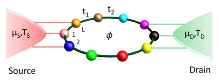
<figcaption class="paper-figure-caption"><b>Fig 1.</b> FIG. 1. Schematic of the symmetric electrode-coupling geom- etry with three lattice sites coupled to each reservoir.</figcaption>
</figure>
<figure class="paper-figure-card">
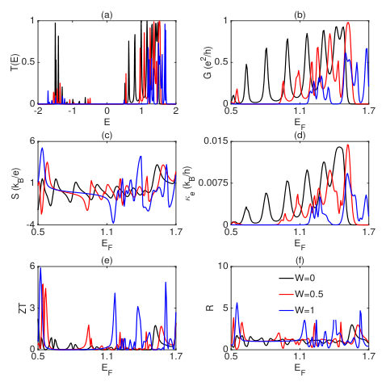
<figcaption class="paper-figure-caption"><b>Fig 2.</b> FIG. 2. Symmetric electrode-coupling geometry in the topo- logical dimerized regime (t1 &lt; t2). (a) Transmission spec- trum, (b) electrical conductance, (c) Seebeck coefficient, (d) electronic thermal conductance, (e) thermoelectric figure of merit (ZT ), and (f) Lorenz ratio as functions of the Fermi energy for different quasiperiodic modulation strengths. The parameters are γ = 0.05, T = 0.005, φ = 0, t1 = 0.5, and t2 = 1.</figcaption>
</figure>
<figure class="paper-figure-card">
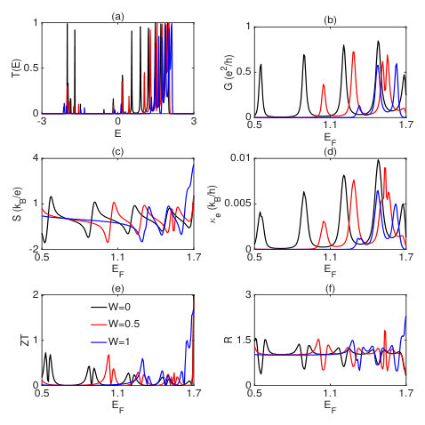
<figcaption class="paper-figure-caption"><b>Fig 3.</b> FIG. 3. Symmetric electrode-coupling geometry in the homogeneous-hopping regime (t1 = t2). (a) Transmission spectrum, (b) electrical conductance, (c) Seebeck coefficient, (d) electronic thermal conductance, (e) thermoelectric figure of merit (ZT ), and (f) Lorenz ratio as functions of the Fermi energy for different quasiperiodic modulation strengths. The parameters are γ = 0.05, T = 0.005, φ = 0, and t1 = t2 = 1.</figcaption>
</figure>
<figure class="paper-figure-card">
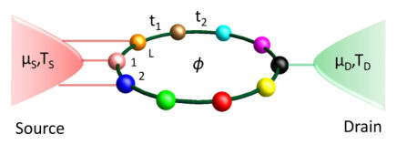
<figcaption class="paper-figure-caption"><b>Fig 4.</b> FIG. 5. Schematic of the asymmetric electrode-coupling ge- ometry with three lattice sites coupled to the source reservoir and a single lattice site coupled to the drain reservoir.</figcaption>
</figure>
<figure class="paper-figure-card">
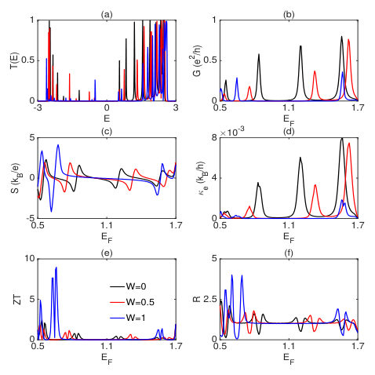
<figcaption class="paper-figure-caption"><b>Fig 5.</b> FIG. 4. Symmetric electrode-coupling geometry in the trivial dimerized regime (t1 &gt; t2). (a) Transmission spectrum, (b) electrical conductance, (c) Seebeck coefficient, (d) electronic thermal conductance, (e) thermoelectric figure of merit (ZT ), and (f) Lorenz ratio as functions of the Fermi energy for dif- ferent quasiperiodic modulation strengths. The parameters are γ = 0.05, T = 0.005, φ = 0, t1 = 1.5, and t2 = 1.</figcaption>
</figure>
</div>

<p><strong>Summary.</strong> This work demonstrates a versatile strategy for enhancing thermoelectric efficiency in quasiperiodic SSH rings by manipulating external parameters. By engineering the electrode coupling geometry and applying a magnetic flux, the system can be tuned into a topological regime that strongly decouples charge and heat currents. This control mechanism allows for theoretical prediction of extremely high thermoelectric figure of merit values.</p>
<p><strong>Why it may be interesting.</strong> The explicit control over energy filtering and the resulting violation of the Wiedemann-Franz law provides a powerful theoretical blueprint for designing next-generation quantum thermoelectric devices.</p>
<details>
<summary>Detailed structure</summary>
<p><strong>Main problem.</strong> The goal is to engineer giant thermoelectric performance in nanoscale conductors by precisely controlling energy-selective charge transport and suppressing electronic heat transport.</p>
<p><strong>Main result.</strong> The combination of quasiperiodicity, topological phases, magnetic flux, and engineered electrode coupling can boost the thermoelectric figure of merit ($ZT$) dramatically, reaching values up to $\approx 90$.</p>
<p><strong>Method.</strong> The study employs the non-equilibrium Green's function (NEGF) formalism within the Landauer-Büttiker framework to calculate transport properties.</p>
<p><strong>Model / system.</strong> The system is a quasiperiodic Su-Schrieffer-Heeger (SSH) ring threaded by a magnetic flux, coupled to source and drain reservoirs. The Hamiltonian includes terms for the ring, the reservoirs, and the coupling.</p>
<p><strong>Key observables.</strong> Thermoelectric figure of merit ($ZT$), electrical conductance ($G$), Seebeck coefficient ($S$), electronic thermal conductance ($\kappa_e$), and the violation of the Wiedemann-Franz law.</p>
<p><strong>Important parameters / regimes.</strong> Electrode-coupling geometry (symmetric vs. asymmetric), magnetic flux ($\Phi$), and SSH dimerization parameters ($t_1, t_2$) defining topological/trivial regimes.</p>
<p><strong>Assumptions / limitations.</strong> The source and drain reservoirs are modeled as noninteracting metallic baths, and the analysis uses the Wide-Band Limit approximation.</p>
<p><strong>Figures summary.</strong> Figures illustrate the dependence of transport quantities ($T(E)$, $G_{max}$, $|S|_{max}$, $\kappa_e$, $ZT_{max}$) on magnetic flux ($\phi$) for different coupling geometries and SSH regimes.</p>
<p><strong>Paper structure.</strong> The paper systematically investigates how electrode coupling geometry acts as a control parameter, followed by analyzing the effect of magnetic flux, and finally demonstrating the synergistic enhancement of $ZT$ through the interplay of all these factors.</p>
</details>
<details>
<summary>Abstract</summary>
<p>We investigate coherent thermoelectric transport in magnetic-flux-threaded quasiperiodic Su-Schrieffer-Heeger (SSH) rings with engineered multi-site electrode couplings using the nonequilibrium Green's function formalism within the Landauer-Büttiker framework. We demonstrate that the electrode-coupling geometry serves as a powerful control parameter for tailoring quantum interference, thereby reshaping the transmission spectrum and thermoelectric response. In the absence of magnetic flux, the trivial dimerized phase ($t_1>t_2$) exhibits the highest thermoelectric efficiency, with asymmetric coupling producing a substantially larger figure of merit than the symmetric geometry. Magnetic flux further reconstructs the transmission spectrum through Aharonov-Bohm interference, driving a crossover of the optimal thermoelectric regime from the trivial to the topological dimerized phase. Under optimal flux conditions, the thermoelectric figure of merit reaches $ZT \approx 12$ for symmetric coupling and is dramatically enhanced to $ZT \approx 90$ for asymmetric coupling through enhanced energy filtering and suppressed electronic thermal transport. We further establish a clear correlation between the enhancement of thermoelectric efficiency and the violation of the Wiedemann-Franz law. Our results demonstrate that the combined interplay of quasiperiodicity, topology, magnetic flux, and electrode-coupling geometry provides a versatile strategy for engineering high-performance coherent thermoelectric devices.</p>
</details>
<p><sub><a href="#top">↑ back to top</a></sub></p>

<p><a id="paper-2609.04642"></a></p>
<h3 id="evidence-of-crystal-field-mediated-anisotropic-orbital-rashba-effect-in-epitaxial-rufm-heterostructure"><a href="http://arxiv.org/abs/2609.04642v1">Evidence of Crystal-Field-Mediated Anisotropic Orbital Rashba Effect in Epitaxial Ru/FM Heterostructure</a></h3>
<p><strong>Authors:</strong> Yu Zhang, Wenhao Niu, Yumin Yang, Wenqi Xu, Gengchen Meng, Hailong Wang, Na Lei, Dahai Wei<br>
<strong>Type:</strong> experiment · <strong>Category:</strong> other · <strong>PDF:</strong> <a href="https://arxiv.org/pdf/2609.04642v1">https://arxiv.org/pdf/2609.04642v1</a><br>
<strong>Analysis basis:</strong> full PDF text, analyzed in chunks
<strong>Topic relevance:</strong> <code>analog quantum simulation</code> <strong>1/5</strong> · <code>quantum measurements</code> <strong>1/5</strong></p>
<div class="figure-strip-hint">↔ Scroll figures horizontally</div>
<div class="paper-figures-scroll">
<figure class="paper-figure-card">
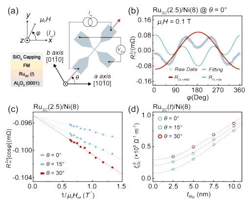
<figcaption class="paper-figure-caption"><b>Fig 1.</b> FIG. 1. HHV results for Ru/Ni series samples. (a) Schematic illustration of HHV measurement and sample geometry. (b) R2ω xy results for RuSC(2.5)/Ni(8) at µ0H = 0.1T. The applied electric field was along [10¯10]. (c) Extracted R2ω xy as a function of 1/(Hxy + Hk) in RuSC(2.5)/Ni(8) at θ = 0°, 15° and 30°, respectively. (d) ξE DL as a function of tRu, measured at θ = 0°, 15° and 30°, respectively. Black curves were fits to the diffusive transport model.</figcaption>
</figure>
<figure class="paper-figure-card">
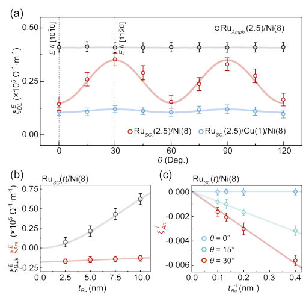
<figcaption class="paper-figure-caption"><b>Fig 2.</b> FIG. 2. Crystalline dependence of orbital torque. (a) ξE DL for RuSC(2.5)/Ni(8), RuSC(2.5)/Cu(1)/Ni(8) and RuAmph(2.5)/Ni(8) samples at different in-plane crystalline direction. (b) Extracted ξE Bulk and ξE Ani terms as a function of tRu. (c) Extracted ξj Ani as a function of t−1 Ru at θ = 0°, 15° and 30°.</figcaption>
</figure>
<figure class="paper-figure-card">
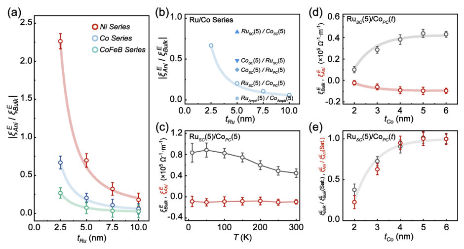
<figcaption class="paper-figure-caption"><b>Fig 3.</b> FIG. 3. (a) Comparison of |ξE Ani/ξE Bulk| for RuSC(t)/Ni, RuSC(t)/Co and RuSC(t)/CoFeB series samples as a function of tRu. (b) Detailed comparison of |ξE Ani/ξE Bulk| results for Ru/Co series sample, with different interfacial crystalline and stacking order. (c) Temperature dependence of ξE Bulk and ξE Ani terms in RuSC(5)/CoP C(5) sample. (d) Extracted ξE Bulk and ξE Ani in RuSC(5)/CoP C(t) as a function of tCo. (e) Scaling of ξE Bulk and ξE Ani data with its values at tCo=6 nm. The light gray line</figcaption>
</figure>
<figure class="paper-figure-card">
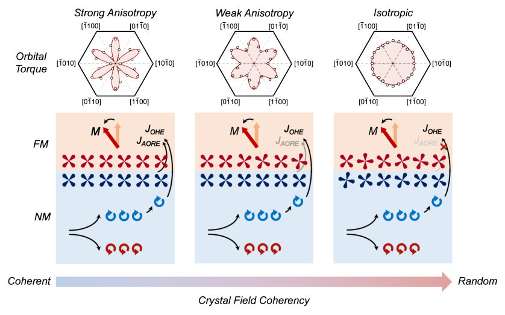
<figcaption class="paper-figure-caption"><b>Fig 4.</b> FIG. 4. Schematic illustration of crystal-field-mediated AORE. A coherent crystal field modulates the orbital textures and further gives anisotropic ORE response. In the highly coherent limit, CFC modulation produces a pronounced anisotropic orbital response (left panel). As CFC was progressively reduced, such modulation was weakened and the lattice-locked anisotropic component is strongly suppressed (middle panel). In the fully disordered limit, the crystallographic modulation becomes negligible, leaving a predominantly isotropic response (right panel).</figcaption>
</figure>
</div>

<p><strong>Summary.</strong> This work experimentally investigates the anisotropic orbital Rashba effect in epitaxial Ru/FM interfaces. By decomposing the measured orbital torque, the authors isolate an interfacial, anisotropic component ($\xi_{E}^{	ext{Ani}}$) that is critically dependent on the structural coherence of the interface. This establishes interfacial crystal-field coherency as a key mechanism for engineering directional orbital torques in spintronic devices.</p>
<p><strong>Why it may be interesting.</strong> While primarily condensed matter/spintronics, the precise control over orbital textures via interfacial symmetry breaking and crystal fields touches upon concepts of engineered quantum states and topological responses, which can be relevant to advanced quantum materials research.</p>
<details>
<summary>Detailed structure</summary>
<p><strong>Main problem.</strong> The primary challenge addressed is the effective control and understanding of orbital Rashba textures, specifically investigating the role of the interfacial crystal field in generating orbital angular momentum (OAM) torques.</p>
<p><strong>Main result.</strong> The authors experimentally report evidence for a crystal-field-mediated anisotropic orbital Rashba effect (AORE) in epitaxial Ru/FM heterostructures, confirming that interfacial crystal-field coherency is crucial for manipulating orbital torques.</p>
<p><strong>Method.</strong> The study uses epitaxial heterostructure fabrication, structural characterization (XRD, RHEED), and electrical measurements, specifically Harmonic Hall Voltage (HHV) measurements, to quantify orbital torques.</p>
<p><strong>Model / system.</strong> The physical system is epitaxial Ru/ferromagnet (FM) heterostructures (e.g., Ru/Ni, Ru/Co). The mechanism involves the hybridization of Ru 4d orbitals with FM 3d orbitals, modulated by interfacial symmetry breaking and crystal field coherency (CFC).</p>
<p><strong>Key observables.</strong> The key observables are the total orbital torque ($\xi_{E}^{	ext{Total}}$), which is decomposed into isotropic bulk ($\xi_{E}^{	ext{Bulk}}$) and anisotropic interfacial ($\xi_{E}^{	ext{Ani}}$) contributions, measured via $  ext{R}_{2\omega}^{xy}$ and $\xi_{E}^{	ext{DL}}(	heta)$.</p>
<p><strong>Important parameters / regimes.</strong> Key parameters include the Ru thickness ($t_{Ru}$), the nature of the FM layer (Ni, Co, CoFeB), and the degree of interfacial crystallinity (CFC).</p>
<p><strong>Assumptions / limitations.</strong> The analysis assumes that the anisotropic torque ($\xi_{E}^{	ext{Ani}}$) is intrinsically linked to the interfacial crystal-field coherency, and that the total torque can be successfully decomposed into bulk and interfacial components.</p>
<p><strong>Figures summary.</strong> Figures demonstrate the angular dependence of the orbital torque ($    ext{R}<em E>{2\omega}^{xy}$) and show that the anisotropic torque ($\xi</em>$) shows thickness dependence.}^{   ext{Ani}}$) vanishes when crystallinity is degraded (e.g., by Cu insertion or amorphous Ru), while the bulk torque ($\xi_{E}^{   ext{Bulk}</p>
<p><strong>Paper structure.</strong> The paper establishes the problem of controlling orbital torques, presents the experimental setup using Ru/FM heterostructures, measures the total torque, decomposes it into bulk and anisotropic interfacial parts, and concludes by linking the anisotropic component directly to the structural coherence of the interface.</p>
</details>
<details>
<summary>Abstract</summary>
<p>Electrical generation of orbital angular momentum provides a promising route to current-induced torques, yet effective control of orbital Rashba textures still remains challenging, particularly because the role of the interfacial crystal field remains largely unexplored. Here, we report experimental evidence for a crystal-field-mediated interfacial anisotropic orbital Rashba effect (AORE) in epitaxial Ru/ferromagnet heterostructures. Total orbital torque was disentangled into an isotropic bulk contribution and an in-plane anisotropic interfacial contribution. The latter was strongly suppressed by degrading the crystallinity of either constituent and by inserting a Cu spacer, highlighting the essential roles of coherent interfacial orbital hybridization and direct Ru/ferromagnet contact. These results identify interfacial crystal-field coherency as a key ingredient in manipulating orbital Rashba textures and establish a route toward engineering the symmetry and directionality of orbital torques.</p>
</details>
<p><sub><a href="#top">↑ back to top</a></sub></p>

<p><a id="paper-2609.05082"></a></p>
<h3 id="a-locally-ab-initio-computational-framework-for-arbitrary-incommensurate-materials-interfaces"><a href="http://arxiv.org/abs/2609.05082v1">A locally ab initio computational framework for arbitrary incommensurate materials interfaces</a></h3>
<p><strong>Authors:</strong> Drake Niedzielski, Tomás A. Arias<br>
<strong>Type:</strong> theory · <strong>Category:</strong> numerical methods · <strong>PDF:</strong> <a href="https://arxiv.org/pdf/2609.05082v1">https://arxiv.org/pdf/2609.05082v1</a><br>
<strong>Analysis basis:</strong> full PDF text, analyzed in chunks
<strong>Topic relevance:</strong> <code>Frenkel-Kontorova</code> <strong>1/5</strong></p>
<div class="figure-strip-hint">↔ Scroll figures horizontally</div>
<div class="paper-figures-scroll">
<figure class="paper-figure-card">
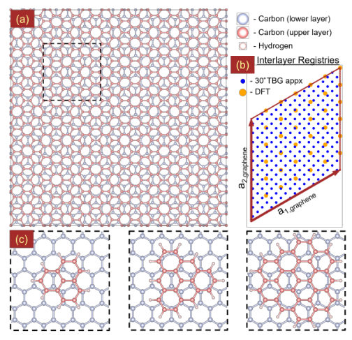
<figcaption class="paper-figure-caption"><b>Fig 1.</b> FIG. 1. Atomic-scale sampling of local interlayer registries in 30◦twisted bilayer graphene. (a) Commensurate approxi- mant of 30◦-TBG containing 1672 atoms. (b) Local interlayer registries of all atomic environments in this 1672 atom sys- tem (blue dots) and a sparser 6 × 6 sampling (orange dots) at which we perform DFT calculations. (c) Three elements of MINT-proxy sequence whose structures converge to the local atomic environment of the bulk system (black dashed-line box in (a)). Atomic visualizations performed with VESTA [19].</figcaption>
</figure>
<figure class="paper-figure-card">
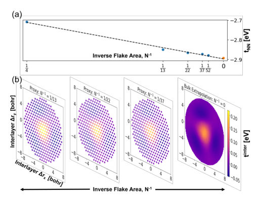
<figcaption class="paper-figure-caption"><b>Fig 2.</b> FIG. 2. Power-law extrapolation of Wannier matrix elements to the bulk limit (a) First nearest neighbor Wannier matrix elements for monolayer graphene proxy systems versus the inverse number of carbon atoms N −1. Matrix elements ob- tained from graphene proxy systems (blue dots) show a clear power-law convergence trend with system size (dashed line fit) to the bulk graphene matrix element of −2.89 eV (orange dot), demonstrating the validity of this approach. Color indicates magnitude of the Wannier matrix element. (b) DFT calcu- lated interlayer Wannier matrix elements from MINT proxy systems plotted as a function of the radial displacement and inverse flake size. Bulk values shown in the...</figcaption>
</figure>
<figure class="paper-figure-card">
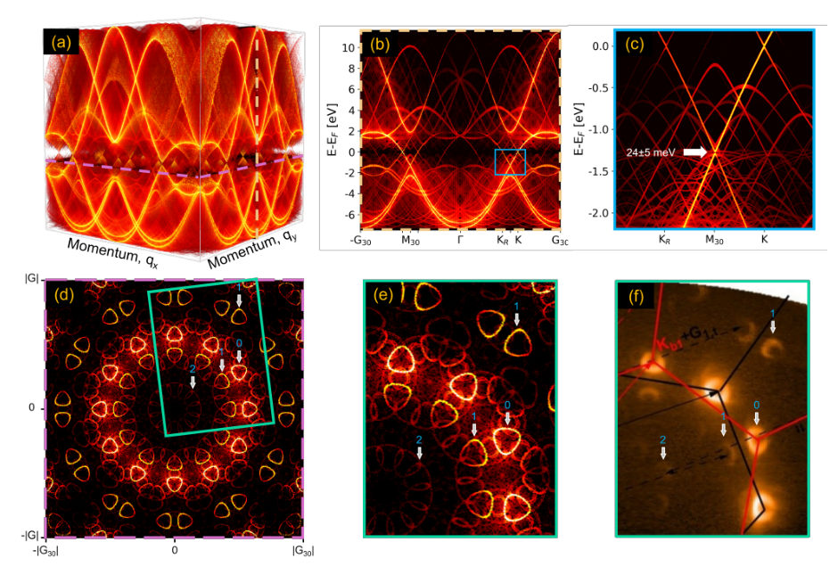
<figcaption class="paper-figure-caption"><b>Fig 3.</b> FIG. 3. Twelve-fold symmetric electronic structure and mirrored Dirac cones of 30◦twisted bilayer graphene. Electronic structure of 30◦-TBG. (a) 3D Rendering of the momentum resolved DOS of 30◦-TBG calculated as described in the main text. Intensity is indicated by color hue and is plotted on a log scale to help visualize subtle features. Partial transparency is used for visualization purposes. (b) Slice through (a) at qy = 0 showing the bandstructure. In addition to the regular Dirac cones at K and K’, mirrored Dirac cones appear at KR and K’R as expected. (c) Zoom-in of blue-box region of (b) with higher sample density. Energy and momentum windows chosen to match the experimental Fig. 3D...</figcaption>
</figure>
<figure class="paper-figure-card">
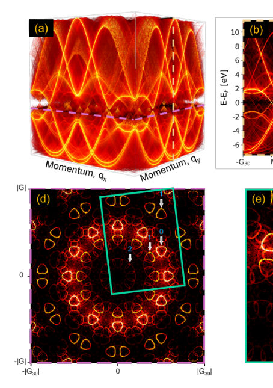
<figcaption class="paper-figure-caption"><b>Fig 4.</b> Fig. 3(b) shows a representative slice through n(q, E) at qy = 0, displayed in the conventional energy– momentum format. In addition to the primary Dirac cones inherited from the individual graphene layers at the K and K′ points, the calculation clearly reproduces the mirrored Dirac cones at the expected KR and K′ R locations. A magnified view of this region, shown in Fig. 3(c), is computed using denser momentum sampling</figcaption>
</figure>
<figure class="paper-figure-card">
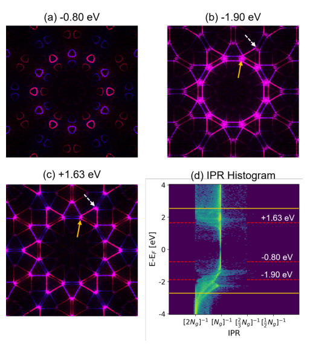
<figcaption class="paper-figure-caption"><b>Fig 5.</b> FIG. 4. Interlayer hybridization and localization of quasiperi- odic flat-band states in 30◦twisted bilayer graphene. (a-c) Layer projected momentum resolved DOS with red(blue) hue corresponding top(bottom) layer occupation. RGB coloring is used such that states hybridized equally across both layers appear magenta. Color intensity corresponds to the square- root of the total spectral intensity to preserve relative layer- weight contrast. (a) slice at -0.80 eV shows Dirac cones and their mirrors originate primarily from a single layer. (b,c) slices at -1.90 eV and 1.63 eV displaying the formation of cir- cular flat band features (magenta circles at solid-yellow and dashed-white arrows), at...</figcaption>
</figure>
</div>

<p><strong>Summary.</strong> This work presents a novel, scalable computational framework to calculate electronic structures for incommensurate materials interfaces, circumventing the limitations of periodicity-based methods. By exploiting the nearsightedness of Wannier functions, the authors interpolate and extrapolate Hamiltonian parameters based on local interlayer registries. This allows for accurate, first-principles prediction of emergent phenomena in complex systems like twisted bilayer graphene.</p>
<p><strong>Why it may be interesting.</strong> The reliance on local environment descriptors and interpolation techniques to bypass large supercells is a powerful numerical tool applicable to complex, quasiperiodic, or disordered quantum systems.</p>
<details>
<summary>Detailed structure</summary>
<p><strong>Main problem.</strong> Developing a computationally efficient and accurate first-principles electronic-structure method for incommensurate materials interfaces, which lack shared periodicity.</p>
<p><strong>Main result.</strong> The framework successfully reproduces key spectral features of quasicrystalline twisted bilayer graphene, establishing a general, predictive route for electronic structure calculations in such systems.</p>
<p><strong>Method.</strong> It constructs locally ab initio electronic Hamiltonians by exploiting the nearsightedness of Wannier matrix elements, allowing systematic extrapolation and interpolation across arbitrary interlayer registries.</p>
<p><strong>Model / system.</strong> The study focuses on incommensurate materials interfaces, exemplified by $30^\circ$-twisted bilayer graphene. The electronic structure is modeled using a Wannier Hamiltonian incorporating intra- and inter-layer hopping terms.</p>
<p><strong>Key observables.</strong> Momentum-resolved density of states ($n(\vec{q}, E)$), mirrored Dirac cones, minigaps, and the Inverse Participation Ratio (IPR).</p>
<p><strong>Important parameters / regimes.</strong> Interlayer registry ($\vec{r}(\vec{r}_A)$), twist angle ($30^\circ$), and the size/scope of the local environment description.</p>
<p><strong>Assumptions / limitations.</strong> The local electronic environment varies smoothly with the interlayer registry, allowing for reliable interpolation and extrapolation from finite proxy systems.</p>
<p><strong>Figures summary.</strong> Figures illustrate local interlayer registries, the convergence of Wannier matrix elements, and the resulting 3D momentum-resolved density of states showing characteristic spectral features.</p>
<p><strong>Paper structure.</strong> The paper introduces the computational framework, validates it on $30^\circ$-TBG by reproducing known spectral features, and establishes its general applicability to any structurally incommensurate interface.</p>
</details>
<details>
<summary>Abstract</summary>
<p>Incommensurate materials interfaces constitute a broad and technologically important class of systems, yet their lack of shared periodicity limits predictive and computationally efficient first-principles electronic-structure methods. Here we introduce a scalable computational framework for constructing locally ab initio electronic Hamiltonians for arbitrary materials interfaces. Our approach exploits the nearsightedness of Wannier Hamiltonian matrix elements, enabling their systematic extrapolation and interpolation across interlayer registries. This strategy yields transferable Hamiltonians that retain first-principles accuracy while bypassing the need for prohibitively large commensurate supercells or Moiré approximations. We validate the framework on quasicrystalline 30° twisted bilayer graphene, reproducing experimentally observed spectral features including mirrored Dirac cones and minigaps at avoided crossings arising from generalized interlayer scattering. We further predict quasiperiodic flat-band states in experimentally accessible doping regimes. By enabling predictive electronic-structure calculations across structurally incommensurate interfaces, this framework establishes a practical route to first-principles exploration of emergent interfacial phenomena.</p>
</details>
<p><sub><a href="#top">↑ back to top</a></sub></p>

<p><a id="paper-2609.04587"></a></p>
<h3 id="band-gaps-and-localization-of-surface-waves-at-hyperbolic-material-and-topological-insulator-interfaces"><a href="http://arxiv.org/abs/2609.04587v1">Band Gaps and Localization of Surface Waves at Hyperbolic Material and Topological Insulator Interfaces</a></h3>
<p><strong>Authors:</strong> Andrei I. Maimistov, Ildar R. Gabitov, Ilia Kuk<br>
<strong>Type:</strong> theory · <strong>Category:</strong> other · <strong>PDF:</strong> <a href="https://arxiv.org/pdf/2609.04587v1">https://arxiv.org/pdf/2609.04587v1</a><br>
<strong>Analysis basis:</strong> full PDF text, analyzed in chunks
<strong>Topic relevance:</strong> <code>interference shaping light</code> <strong>1/5</strong></p>
<div class="figure-strip-hint">↔ Scroll figures horizontally</div>
<div class="paper-figures-scroll">
<figure class="paper-figure-card">
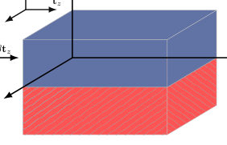
<figcaption class="paper-figure-caption"><b>Fig 1.</b> FIG. 1. Interface geometry for the hyperbolic material (HM) and topological insulator (TI) structure. The HM occupies x &lt; 0 and is shown with hatching, while the TI occupies x &gt; 0. The surface wave propagates along the z direction with propagation constant β. The unit normal n points from the HM into the TI, and ty and tz denote tangential directions along the interface.</figcaption>
</figure>
<figure class="paper-figure-card">
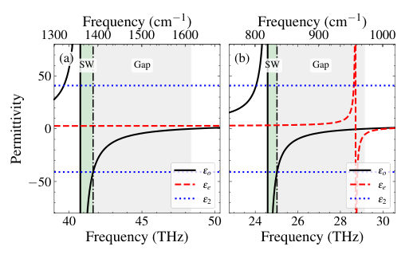
<figcaption class="paper-figure-caption"><b>Fig 2.</b> FIG. 2. Frequency-dependent permittivities and surface wave (SW) band gap boundaries for natural Reststrahlen-band hy- perbolic materials: (a) hBN/Bi2Se3 and (b) α-MoO3/Bi2Se3. The curves show the permittivity components denoted by εo and εe in the effective uniaxial model, together with the topo- logical insulator permittivity ε2. For α-MoO3, εo and εe correspond to the selected [100] and [010] principal compo- nents, respectively. The mirrored horizontal line at −ε2,α is included to show the finite-coupling band-edge condition |εo(ω)| = ε2,α. The green shaded regions indicate the al- lowed SW windows, while the gray shaded regions indicate the band gaps where |εo(ω)| &lt; ε2,α. The vertical...</figcaption>
</figure>
<figure class="paper-figure-card">
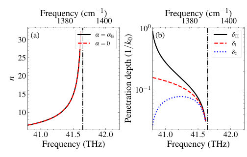
<figcaption class="paper-figure-caption"><b>Fig 3.</b> FIG. 3. Surface wave dispersion and confinement at the hBN/Bi2Se3 interface within the allowed spectral window. (a) Effective index n = β/k0 computed with the topological cou- pling α = αfs and in the non-topological limit α = 0. (b) Penetration depths δTI, δ1, and δ2, shown in units of 1/k0. The vertical dash-dotted line marks ω∗, the upper boundary of the allowed surface wave window.</figcaption>
</figure>
<figure class="paper-figure-card">
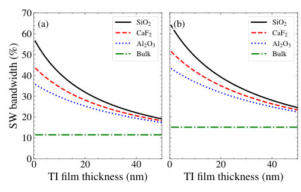
<figcaption class="paper-figure-caption"><b>Fig 4.</b> FIG. 4. Surface wave bandwidth fraction fSW as a function of Bi2Se3 film thickness for thin-film TI configurations on dif- ferent dielectric substrates. Panels show two hyperbolic part- ners: (a) hBN and (b) SiC. The curves correspond to SiO2, CaF2, and Al2O3 substrates, while the horizontal dash-dotted line shows the corresponding bulk Bi2Se3 limit.</figcaption>
</figure>
<figure class="paper-figure-card">
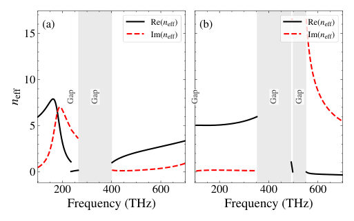
<figcaption class="paper-figure-caption"><b>Fig 5.</b> FIG. 6. Complex effective index neff of the dissipative artifi- cial Ti-Si/Bi2Se3 effective medium surface wave. Panels show the two optical axis orientations: (a) tangential axis, l = ty, and (b) normal axis, l = n. The black solid and red dashed curves show Re neff and Im neff, respectively. Shaded regions mark gaps in the retained physical branch, where the complex branch-selection conditions are not simultaneously satisfied.</figcaption>
</figure>
</div>

<p><strong>Summary.</strong> This theoretical work establishes criteria for surface electromagnetic waves at the interface between hyperbolic metamaterials and topological insulators. It shows that while the topological coupling introduces a small correction, the primary control over the band gaps and confinement remains with the dielectric contrast of the materials. The results offer crucial design guidelines for engineering mid-infrared photonic structures.</p>
<p><strong>Why it may be interesting.</strong> This work bridges concepts from topological physics (axion electrodynamics) with advanced photonics (hyperbolic metamaterials), providing detailed theoretical guidelines for controlling light confinement and band gaps in novel material interfaces.</p>
<details>
<summary>Detailed structure</summary>
<p><strong>Main problem.</strong> The paper develops analytical criteria for understanding surface electromagnetic waves supported at the interface between a hyperbolic material (HM) and a topological insulator (TI).</p>
<p><strong>Main result.</strong> The topological coupling causes only a small, perturbative shift in the band edge, which is otherwise primarily governed by the dielectric contrast of the materials.</p>
<p><strong>Method.</strong> The analysis involves solving bulk field equations for TE and TM components, deriving dispersion relations, and analyzing the conditions for field decay and energy flow in both lossless and dissipative regimes.</p>
<p><strong>Model / system.</strong> The system modeled is an interface between an HM (uniaxial anisotropic medium) and a TI, where the TI's response is governed by axion electrodynamics. The analysis considers different orientations of the HM's optical axis relative to the interface normal and propagation direction.</p>
<p><strong>Key observables.</strong> Existence and localization of surface waves, spectral band gaps, field penetration depths, and energy flow profiles.</p>
<p><strong>Important parameters / regimes.</strong> Dielectric contrast, topological coupling constant ($\alpha$), and the effective index ($n$) of the structure.</p>
<p><strong>Assumptions / limitations.</strong> The analysis assumes a planar interface and notes that in lossy systems, satisfying the dispersion relation is insufficient; physical decay and energy flow must also be verified.</p>
<p><strong>Figures summary.</strong> Figure 1 illustrates the interface geometry, showing the HM on one side and the TI on the other, with propagation along the z-axis.</p>
<p><strong>Paper structure.</strong> The paper proceeds by establishing the theoretical framework using axion electrodynamics and boundary conditions, deriving dispersion relations for different alignments of the optical axis, and then analyzing the results separately for lossless and dissipative media, concluding with design guidelines.</p>
</details>
<details>
<summary>Abstract</summary>
<p>We develop analytical criteria for surface electromagnetic waves at interfaces between hyperbolic materials and topological insulators. The analysis identifies propagation conditions, field penetration depths, and spectral band gaps. In the lossless model, the band edge is governed primarily by dielectric contrast, while the bulk topological coupling produces only a small shift and a weak correction to the dispersion. For structures combining hexagonal boron nitride with bismuth selenide, a thin topological insulator film on a dielectric substrate with low permittivity can substantially broaden the accessible propagation window. We also analyze a dissipative titanium and silicon hyperbolic effective medium interfaced with bismuth selenide. To make the complex branch structure visible, this lossy calculation uses an intentionally enhanced interface response and is therefore illustrative rather than a quantitative prediction for a conventional topological insulator. In the lossy case, a root of the dispersion relation represents a physical guided mode only when the fields decay away from the interface, attenuate consistently along the propagation direction, have finite penetration depths, and exhibit a consistent energy flow profile. Apparent gaps and jumps can occur when the complex quantities controlling transverse decay approach square root branch cuts. These results provide design guidelines for controlling dispersion, confinement, band gaps, and propagation loss in mid-infrared photonic structures.</p>
</details>
<p><sub><a href="#top">↑ back to top</a></sub></p>

<p><a id="paper-2609.05177"></a></p>
<h3 id="transparency-engineered-squid-cells-for-kerr-free-three-wave-mixing-josephson-metamaterials"><a href="http://arxiv.org/abs/2609.05177v1">Transparency-engineered SQUID cells for Kerr-free three-wave-mixing Josephson metamaterials</a></h3>
<p><strong>Authors:</strong> Claudio Guarcello, A. Mert Bozkurt, Carlo Barone, Giovanni Filatrella, Alessandro Bruno, Sergio Pagano<br>
<strong>Type:</strong> theory · <strong>Category:</strong> other · <strong>PDF:</strong> <a href="https://arxiv.org/pdf/2609.05177v1">https://arxiv.org/pdf/2609.05177v1</a><br>
<strong>Analysis basis:</strong> full PDF text, analyzed in chunks
<strong>Topic relevance:</strong> <code>interference shaping light</code> <strong>1/5</strong></p>
<div class="figure-strip-hint">↔ Scroll figures horizontally</div>
<div class="paper-figures-scroll">
<figure class="paper-figure-card">
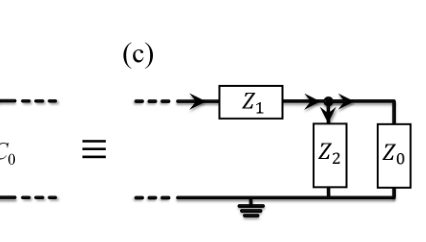
<figcaption class="paper-figure-caption"><b>Fig 1.</b> Figure 1: Schematic construction of the TRAIL cell and its equivalent π-section model. (a) Two Josephson junctions in series, with energies EJ1 and EJ2, define an effective transparent Josephson element with energy–phase relation E▷◁. (b) The effective element is embedded in a flux-biased inductive loop of inductance L, with ground capacitance C0, yielding the elementary TRAIL cell; the linearized Joseph- son branch is described by the differential inductance LJ and capacitance CJ. (c) Equivalent π-cell representation used for passive matching, with series impedance Z1, ground impedance Z2, and line impedance Z0.</figcaption>
</figure>
<figure class="paper-figure-card">
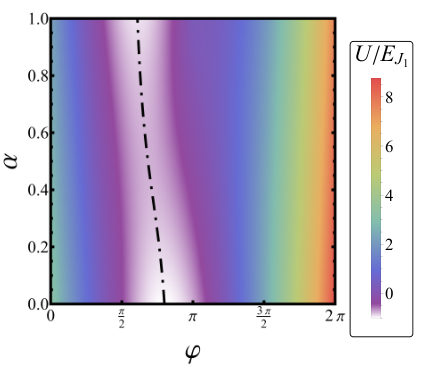
<figcaption class="paper-figure-caption"><b>Fig 2.</b> Figure 2: Normalized potential U/EJ1 for the transparent junction built from two series JJs for β = 0.73. Panel (a): U(ϕ,φ) and α = 0.75; the black dot-dashed line marks ϕmin(φ). Panel (b): U(ϕ,α) and φ = 0.4; the black dot-dashed line marks ϕmin(α).</figcaption>
</figure>
<figure class="paper-figure-card">
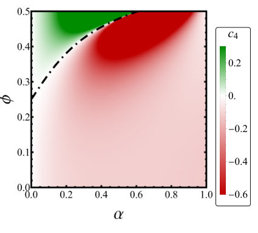
<figcaption class="paper-figure-caption"><b>Fig 3.</b> Figure 3: Cubic and quartic coefficients in the local expansion of the normalized potential u for β = 0.73. Panel (a): map of c3(α,φ). Panel (b): map of c4(α,φ). The black dot-dashed curve marks the Kerr-free ridge c4 = 0.</figcaption>
</figure>
<figure class="paper-figure-card">
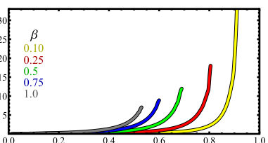
<figcaption class="paper-figure-caption"><b>Fig 4.</b> Figure 4: Kerr-free operating ridge and cubic-to-stiffness ratio. Panel (a): φ⋆(α;β) solving c4 = 0 for β ∈{0.10,0.25,0.5,0.75,1}, i.e., the zero-anharmonicity ridge in the (α,φ) plane. Panel (b): F(α;β) = |c3|/c2 evaluated along the same ridge. In the parameter range explored here, the design trend is to move toward the largest feasible α, subject to c2 &gt; 0, matching, phase-matching, and fabrication constraints.</figcaption>
</figure>
<figure class="paper-figure-card">
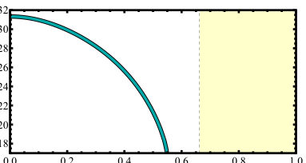
<figcaption class="paper-figure-caption"><b>Fig 5.</b> Figure 5: Frequency-dependent matching, at fixed β = 0.73, along the Kerr-free ridge. Panel (a): ground capacitance Cmatch 0 (α) obtained from both Eqs. (37) and (42), at a given ω = 14 GHz. Panel (b): cutoff frequency ωcutoff(α) from Eq. (44). The gray dashed vertical line marks αcrit; the shaded region corresponds to α &gt; αcrit, where passive matching is no longer possible.</figcaption>
</figure>
</div>

<p><strong>Summary.</strong> This paper introduces a novel, transparency-engineered SQUID cell design to realize Kerr-free three-wave-mixing in Josephson metamaterials. By replacing a standard junction with two series junctions, the authors generate a tunable non-sinusoidal energy-phase relation. They derive the conditions for suppressing the Kerr term while maintaining cubic nonlinearity, providing a practical unit-cell blueprint for advanced superconducting parametric amplifiers.</p>
<p><strong>Why it may be interesting.</strong> This work provides a concrete, tunable circuit design principle for achieving specific nonlinear optical responses (Kerr-free 3WM) in superconducting circuits, which is highly relevant for quantum optics and parametric amplification research.</p>
<details>
<summary>Detailed structure</summary>
<p><strong>Main problem.</strong> The goal is to design a Josephson metamaterial unit-cell capable of achieving Kerr-free three-wave-mixing (3WM) by suppressing the unwanted quartic Kerr term while maintaining a finite cubic nonlinearity.</p>
<p><strong>Main result.</strong> The authors propose a transparency-engineered rf-SQUID cell using two series junctions, providing a compact unit-cell design principle for Kerr-free 3WM Josephson metamaterials.</p>
<p><strong>Method.</strong> The analysis involves deriving the effective energy-phase relation from the series junctions and performing a local Taylor expansion of the potential to identify the Kerr-free operating ridge in parameter space.</p>
<p><strong>Model / system.</strong> The system is an rf-SQUID cell where the conventional junction is replaced by an effective Josephson element formed by two junctions in series, yielding a non-sinusoidal energy-phase relation.</p>
<p><strong>Key observables.</strong> The local nonlinear coefficients ($c_3$ for cubic nonlinearity and $c_4$ for the quartic Kerr term), the required ground capacitance ($C_{match,0}$), and the cutoff frequency ($\omega_{cutoff}$).</p>
<p><strong>Important parameters / regimes.</strong> The junction asymmetry parameter ($\alpha = I_{c2}/I_{c1}$), the applied magnetic flux bias ($\varphi$), and the screening parameter ($eta$).</p>
<p><strong>Assumptions / limitations.</strong> The derivation assumes that Josephson energies dominate over charging energy ($E_{Ji} \gg E_C$), and the analysis relies on local nonlinear potential expansion and passive matching constraints.</p>
<p><strong>Figures summary.</strong> Figure 1 illustrates the TRAIL cell schematic; Figure 2 shows the potential dependence on $\alpha$ and $\varphi$; and Figure 3 maps the cubic ($c_3$) and quartic ($c_4$) coefficients, revealing the Kerr-free ridge.</p>
<p><strong>Paper structure.</strong> The paper introduces the physical model (TRAIL cell), derives the effective nonlinear potential, analyzes the local coefficients to find the Kerr-free condition, and finally constrains this design space using passive matching and cutoff frequency analysis.</p>
</details>
<details>
<summary>Abstract</summary>
<p>We introduce a transparency-engineered rf-SQUID cell for Kerr-free three-wave-mixing Josephson metamaterials. This design replaces the conventional tunnel-junction element with an effective Josephson element formed by two junctions in series, yielding a non-sinusoidal energy-phase relation that can be used as a tunable nonlinear design resource. We show that the asymmetry between the two series junctions and the applied flux bias provide independent control over the local expansion of the rf-SQUID potential, enabling operating points where the leading quartic Kerr term is suppressed while the cubic nonlinearity remains finite. We derive the corresponding Kerr-free condition, identify the resulting operating ridge in parameter space, and analyze the local stability and passive-matching constraints that bound its physically accessible portion. Our results provide a compact unit-cell design principle for three-wave-mixing Josephson metamaterials and suggest a route toward Kerr-suppressed Josephson traveling-wave parametric amplifiers.</p>
</details>
<p><sub><a href="#top">↑ back to top</a></sub></p>
<h3 id="other-secondary-papers-2">Other secondary papers (2)</h3>
<details>
<summary>Show other secondary papers</summary>

<p><a id="paper-2609.04605"></a></p>
<h3 id="light-alkali-metal-functionalized-two-dimensional-c5n-monolayers-for-enhanced-hydrogen-storage"><a href="http://arxiv.org/abs/2609.04605v1">Light alkali metal functionalized two-dimensional C5N monolayers for enhanced hydrogen storage</a></h3>
<p><strong>Authors:</strong> Gom Dorji, Sonam Peden, Syed Faraz Hasan, Kondo-Francois Aguey-Zinsou, Tanveer Hussain<br>
<strong>Type:</strong> theory · <strong>Category:</strong> statistical mechanics · <strong>PDF:</strong> <a href="https://arxiv.org/pdf/2609.04605v1">https://arxiv.org/pdf/2609.04605v1</a><br>
<strong>Analysis basis:</strong> full PDF text, analyzed in chunks</p>
<div class="figure-strip-hint">↔ Scroll figures horizontally</div>
<div class="paper-figures-scroll">
<figure class="paper-figure-card">
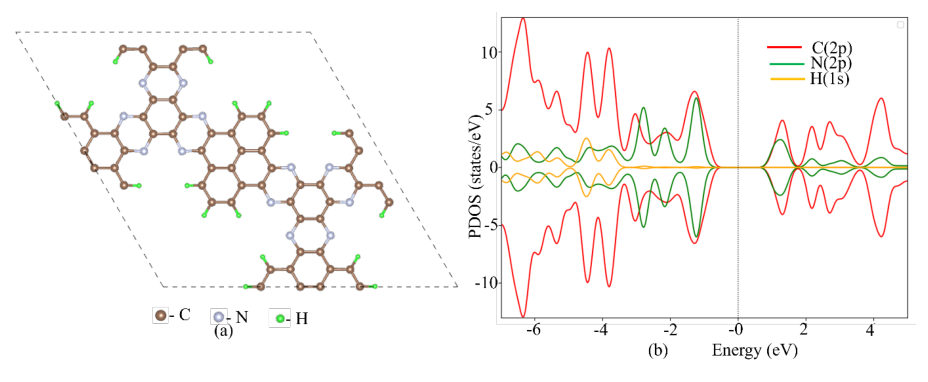
<figcaption class="paper-figure-caption"><b>Fig 1.</b> Figure 1. (a) Optimized structure of C5N (brown – carbon, grey – nitrogen, green-hydrogen). (b) Electronic properties showing orbital hybridization and band gaps.</figcaption>
</figure>
<figure class="paper-figure-card">
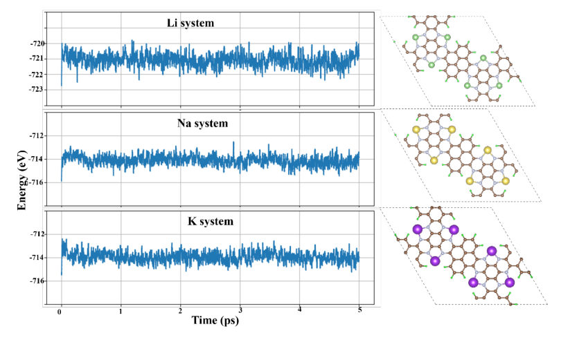
<figcaption class="paper-figure-caption"><b>Fig 2.</b> Figure 3. Variation of total energies at an elevated temperature and the optimized structures of 6M-C5N. (light green- Li, yellow – Na, and purple – K)</figcaption>
</figure>
<figure class="paper-figure-card">
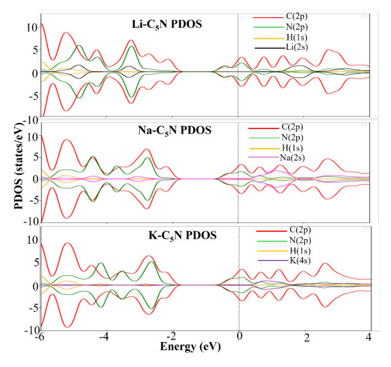
<figcaption class="paper-figure-caption"><b>Fig 3.</b> Figure 4. Projected density of state plot for 6Li-C5N, 6Na-C5N, and 6K-C5N. The Fermi level is adjusted to 0.</figcaption>
</figure>
<figure class="paper-figure-card">

<figcaption class="paper-figure-caption"><b>Fig 4.</b> Figure 5. Charge density differences of (a) 6Li-C5N, (b) 6Na-C5N, and 6K-C5N. Cyan colour represents charge depletion, yellow colour represents charge accumulation with iso surface 0.004e/Å3.</figcaption>
</figure>
<figure class="paper-figure-card">

<figcaption class="paper-figure-caption"><b>Fig 5.</b> Figure 6. The stepwise loading of H2 on 6Li-C5N is shown in Figure S5 (Supporting</figcaption>
</figure>
</div>
<p><strong>Summary.</strong> This theoretical study uses DFT to investigate alkali-metal functionalized 2D C5N monolayers as potential hydrogen storage materials. The research demonstrates that functionalization significantly boosts H2 adsorption capacity and maintains thermal stability. The findings suggest that these modified 2D materials are promising candidates for efficient and reversible hydrogen energy storage.</p>
<p><strong>Why it may be interesting.</strong> While focused on materials science, the thermodynamic analysis (Gibbs free energy, Van't Hoff equation) and the study of adsorption isotherms and phase stability touch upon concepts relevant to statistical mechanics and phase transitions in confined systems.</p>
<details>
<summary>Detailed structure</summary>
<p><strong>Main problem.</strong> Developing efficient and reversible hydrogen (H2) storage systems to mitigate the intermittency of renewable energy sources.</p>
<p><strong>Main result.</strong> Alkali-metal-functionalized C5N monolayers show promising gravimetric storage capacities (up to 9.42 wt% for Li) with moderate and favorable H2 adsorption energies.</p>
<p><strong>Method.</strong> Density Functional Theory (DFT) calculations, supplemented by <em>ab initio</em> molecular dynamics (AIMD) simulations and thermodynamic analysis.</p>
<p><strong>Model / system.</strong> The study investigates the interaction of molecular hydrogen with pristine and alkali-metal (Li, Na, K) functionalized two-dimensional (2D) C5N monolayers.</p>
<p><strong>Key observables.</strong> H2 adsorption energies (E_ads), gravimetric storage capacities (wt%), thermal stability, and binding energies (E_b).</p>
<p><strong>Important parameters / regimes.</strong> Operating temperature (300 K), H2 adsorption energy range (-0.16 to -0.17 eV/H2), and maximum storage capacity (48 H2 molecules/unit cell).</p>
<p><strong>Assumptions / limitations.</strong> The calculations rely on DFT approximations (PBE functional) and assume the feasibility of reversible adsorption/desorption under practical conditions.</p>
<p><strong>Paper structure.</strong> The paper follows a structure of presenting the physical problem (H2 storage), detailing the computational methodology (DFT/AIMD), presenting the results showing enhancement upon functionalization, and concluding with the potential of the optimized material.</p>
</details>
<details>
<summary>Abstract</summary>
<p>This work presents a density functional theory (DFT) investigation of a two-dimensional (2D) C5N monolayer functionalized with Li, Na, and K for hydrogen storage. Pristine C5N exhibits weak H2 adsorption, while alkali-metal functionalization significantly enhances its storage capability. The C5N monolayer can stably accommodate up to six metal dopants, with binding energies stronger than the corresponding cohesive energies, indicating resistance to metal aggregation. Ab initio molecular dynamics simulations further confirm the thermal stability of the functionalized systems at 300 K. Charge transfer from the metal dopants to C5N enhances polarization and strengthens H2 adsorption. Each dopant can adsorb up to eight H2 molecules, yielding a maximum of 48 H2 molecules per unit cell and gravimetric storage capacities of 9.42, 8.61, and 7.93 wt% for Li-, Na-, and K-functionalized C5N, respectively. The average H2 adsorption energies of -0.16 to -0.17 eV/H2 indicate moderate interactions suitable for reversible storage. Thermodynamic analysis further demonstrates favourable H2 adsorption/desorption under practical operating conditions, while desorption-temperature, recovery-time, and volumetric analyses support the potential reversibility and storage performance of these systems. Overall, alkali-metal-functionalized C5N emerges as a promising 2D material for efficient and reversible H2 storage.</p>
</details>
<p><sub><a href="#top">↑ back to top</a></sub></p>

<p><a id="paper-2609.04883"></a></p>
<h3 id="spin-point-group-classification-of-multipoles-for-nonrelativistic-collinear-magnets"><a href="http://arxiv.org/abs/2609.04883v1">Spin-Point-Group Classification of Multipoles for Nonrelativistic Collinear Magnets</a></h3>
<p><strong>Authors:</strong> Yuuki Ogawa, Satoru Hayami<br>
<strong>Type:</strong> theory · <strong>Category:</strong> other · <strong>PDF:</strong> <a href="https://arxiv.org/pdf/2609.04883v1">https://arxiv.org/pdf/2609.04883v1</a><br>
<strong>Analysis basis:</strong> full PDF text, analyzed in chunks</p>
<div class="figure-strip-hint">↔ Scroll figures horizontally</div>
<div class="paper-figures-scroll">
<figure class="paper-figure-card">

<figcaption class="paper-figure-caption"><b>Fig 1.</b> FIG. 1. (a) Collinear antiferromagnetic structure with the PT sym- metry. (b) Collinear antiferromagnetic (d-wave altermagnetic) struc- ture without the PT symmetry.</figcaption>
</figure>
</div>
<p><strong>Summary.</strong> This paper develops a comprehensive symmetry classification for orbital and spin multipoles in nonrelativistic collinear magnets using Spin Point Groups. It provides a systematic, symmetry-based database that distinguishes between physical responses arising from structure versus those induced purely by magnetic ordering. This framework is crucial for predicting spin-dependent electromagnetic and transport phenomena in magnetic materials without relying on spin-orbit coupling.</p>
<p><strong>Why it may be interesting.</strong> While focused on condensed matter magnetism, the rigorous application of group theory to classify fundamental physical responses (multipoles) provides a powerful, generalizable symmetry framework applicable to understanding emergent quantum phenomena in strongly correlated or magnetic systems.</p>
<details>
<summary>Detailed structure</summary>
<p><strong>Main problem.</strong> To provide a complete symmetry classification of active orbital and spin multipoles for nonrelativistic collinear magnets, addressing limitations in existing classifications when spin-orbit coupling is absent.</p>
<p><strong>Main result.</strong> The work completes the multipole classification for all 122 collinear spin point groups, establishing a symmetry-based database that distinguishes structural and magnetic contributions to active multipoles.</p>
<p><strong>Method.</strong> The authors use Spin Point Groups (SPGs) to treat spin and spatial degrees of freedom independently, classifying multipoles based on symmetry operations ($P, T, PT$).</p>
<p><strong>Model / system.</strong> The focus is on nonrelativistic collinear magnets, analyzing the symmetry constraints imposed by the spin point group structure.</p>
<p><strong>Key observables.</strong> Active orbital and spin multipoles (e.g., electric, magnetic, toroidal types), and symmetry-allowed physical responses (e.g., anomalous Hall effect).</p>
<p><strong>Important parameters / regimes.</strong> Nonrelativistic limit, collinear magnetic ordering, and the specific symmetry operations defining the SPGs.</p>
<p><strong>Assumptions / limitations.</strong> The analysis assumes that treating spin and orbital degrees of freedom independently via SPGs is appropriate when spin-orbit coupling is negligible.</p>
<p><strong>Figures summary.</strong> The notes mention Table I classifying $P, T, PT$ parities for four types of multipoles, and Table II summarizing which classes of multipoles are active for nonmagnetic and collinear SPGs.</p>
<p><strong>Paper structure.</strong> The paper details the SPGs, presents the multipole classification, identifies active multipoles, establishes the correspondence to physical responses, and concludes with implications for understanding spin-dependent phenomena.</p>
</details>
<details>
<summary>Abstract</summary>
<p>Multipole moments provide a unified symmetry language for describing electronic degrees of freedom and their associated physical responses. Although active multipoles have been systematically classified for crystallographic and magnetic point groups, their classification in spin point groups, which naturally describe magnetic systems in the absence of spin-orbit coupling, has remained unexplored. In this work, we present a complete classification of active orbital and spin multipoles for all 32 nonmagnetic and 122 collinear spin point groups. Treating orbital and spin degrees of freedom independently, we identify the symmetry-allowed multipoles associated with nonmagnetic and collinear magnetic orderings and clarify their hierarchy through comparisons among the corresponding spin point groups. The resulting classification provides a symmetry-based database that distinguishes structural and magnetic contributions to active multipoles and directly identifies microscopic order parameters, including those responsible for $d$-, $g$-, and $i$-wave altermagnetism. Furthermore, by classifying response tensors within the same framework, we establish a correspondence between active multipoles and symmetry-allowed physical responses. This correspondence systematically distinguishes nonrelativistic responses that survive without spin-orbit coupling from those requiring relativistic effects, providing a unified framework for understanding and predicting spin-dependent electromagnetic and transport phenomena in magnetic materials.</p>
</details>
<p><sub><a href="#top">↑ back to top</a></sub></p>
</details>

<hr>
<p>
<a href="index.html">← Index</a>
 · <a href="papers_05.html">← Previous</a>
</p>
<hr>

</body>
</html>
